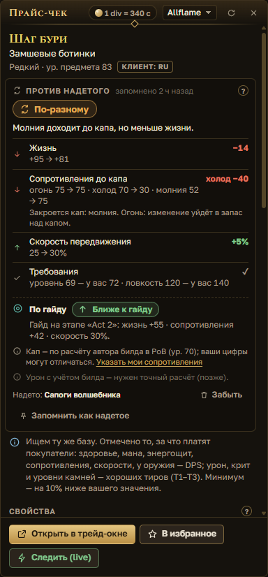
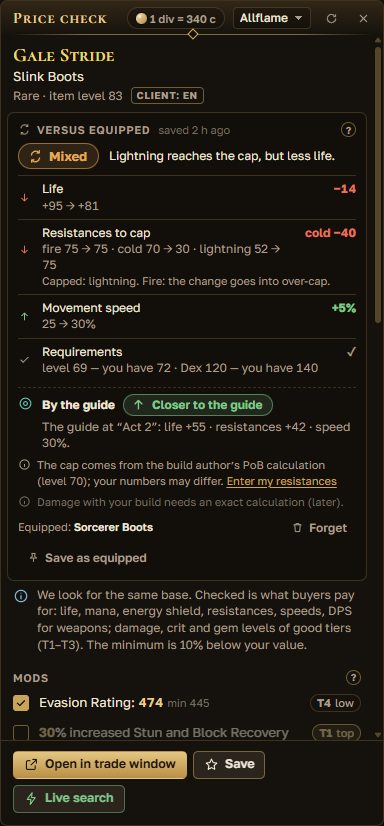
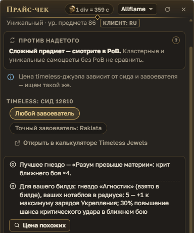
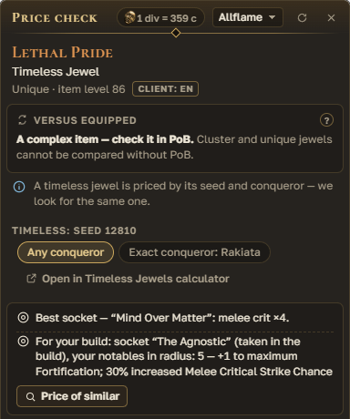
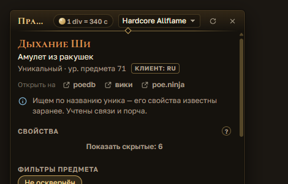
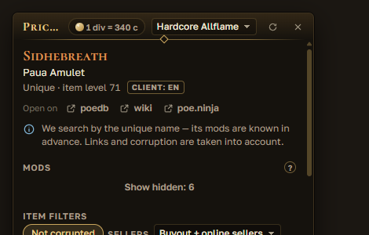
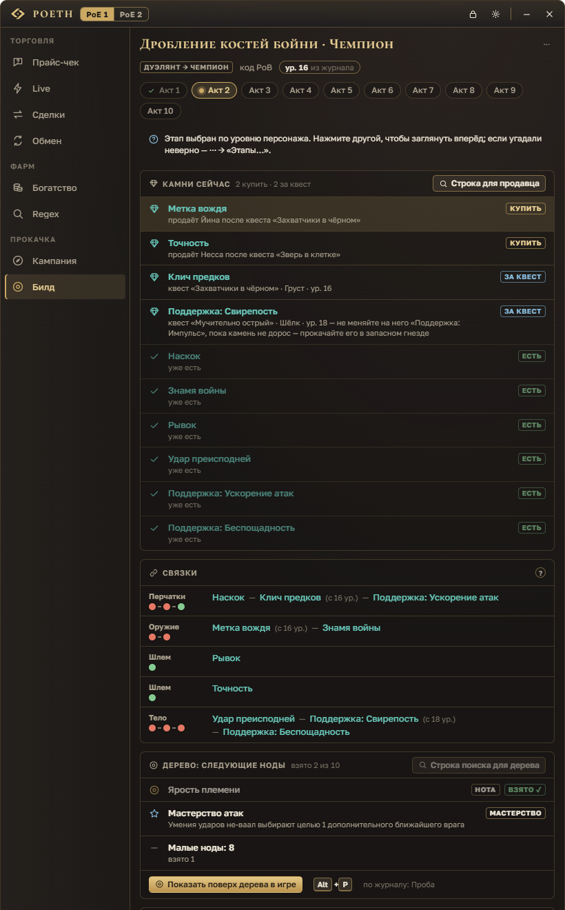
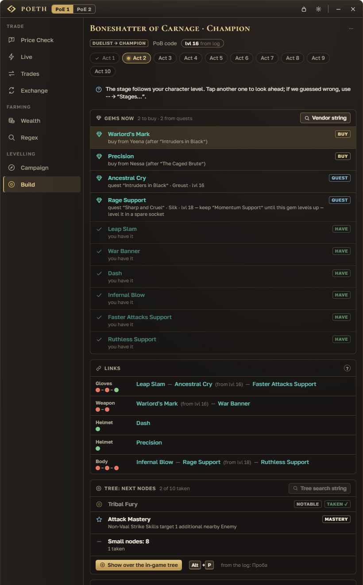
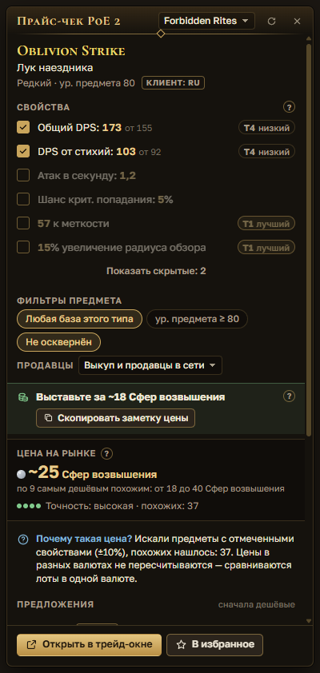
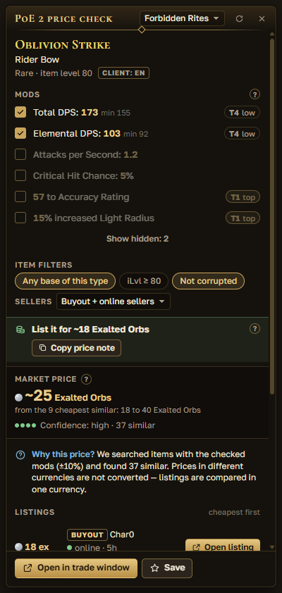

Сейчас доступна демо-версия для знакомства: могут быть ошибки. Полноценный релиз — 11 ноября, установленная версия обновится до него сама. Portable-версию нужно будет скачать заново.A demo version is available now so you can try POETH: expect some bugs. The full release is on November 11, and the installed version updates to it by itself. The portable version will need to be downloaded again.
Гайд по POETHPOETH guide
Как пользоваться POETHHow to use POETH
Все функции приложения по шагам: что это, где найти и как пользоваться. Выберите функцию в оглавлении или начните с раздела «С чего начать».Every feature of the app step by step: what it is, where to find it and how to use it. Pick a feature in the contents or start with “Getting started”.
Картинки — макеты и снимки интерфейса с тестовыми данными, скриншоты из игры появятся позже. Ответы на частые проблемы — в списке вопросов, нашли ошибку — сообщите нам.Pictures are interface mockups and screenshots with test data; in-game screenshots will come later. Common problems are answered in the FAQ; found a bug — let us know.
Как установить POETH — на главной странице. Здесь — что сделать после первого запуска.How to install POETH is on the main page. Here is what to do after the first launch.
Окно игры. В настройках графики Path of Exile выберите режим «Окно без рамки» или «Окно». В полноэкранном режиме окна POETH не видны. Игру не запускайте от имени администратора.Game window. In the Path of Exile graphics settings, choose Windowed Fullscreen or Windowed. In exclusive fullscreen POETH windows are not visible. Do not run the game as administrator.
Мастер первого запуска. Он спросит язык интерфейса и игру, язык клиента игры и сайт трейда (www или ru), покажет главные клавиши и предложит войти в аккаунт — это по желанию. Пройти мастер снова: «Настройки» → «Мастер первого запуска».First-run wizard. It asks for the interface language and the game, the game client language and the trade site (www or ru), shows the main keys and offers an account sign-in — that one is optional. To run it again: Settings → “First-run wizard”.
Окно POETH. Слева — рельс с вкладками по разделам «Торговля», «Фарм» и «Прокачка», внизу — «Помощь» → «Справочник». В шапке — переключатель PoE 1 / PoE 2, замок (сквозной режим), шестерёнка (настройки), «Свернуть» и «Скрыть окно». Вернуть окно: Ctrl+Shift+O или клик по значку POETH в трее.The POETH window. On the left is the rail with tabs grouped into Trade, Farming and Levelling, with Help → Guide at the bottom. The header has the PoE 1 / PoE 2 switch, the lock (click-through), the gear (settings), Minimize and Hide window. To bring the window back: Ctrl+Shift+O or a click on the POETH tray icon.
Главная клавиша — Ctrl+D. Наведите курсор на предмет в игре и нажмите её: рядом появится окно цены. Остальные клавиши — в таблице ниже, их можно поменять в настройках.The main key is Ctrl+D. Hover an item in the game and press it: the price window opens next to it. The other keys are in the table below; you can change them in the settings.
Кнопки поверх игры. Кнопки в окнах POETH поверх игры (карточки сделок, уведомления live) нажимаются мышью сразу, после клика управление возвращается игре. Чтобы поработать в оверлее дольше, нажмите Shift+Space; назад в игру — Esc, клик по пустому месту или ещё раз Shift+Space.Buttons over the game. Buttons in POETH windows over the game (trade cards, live alerts) can be clicked right away; after the click, control goes back to the game. To work in the overlay for longer, press Shift+Space; back to the game: Esc, a click on empty space, or Shift+Space again.
Схема окна POETH для PoE 1: вкладки рельса ведут к разделам этого гайда. В PoE 2 на рельсе только «Прайс-чек» и «Кампания».Diagram of the POETH window for PoE 1: the rail tabs link to the sections of this guide. In PoE 2 the rail has only Price Check and Campaign.
Клавиши по умолчаниюDefault keys
Цена предмета под курсоромPrice of the item under the cursor
Ctrl+D
Включить оверлей, чтобы нажимать в нём кнопкиTurn on the overlay to click its buttons
Shift+Space
Трейд-окноTrade window
Ctrl+Shift+T
Показать или спрятать окно POETHShow or hide the POETH window
Ctrl+Shift+O
Сквозной режим: все клики идут в игруClick-through: all clicks go to the game
Ctrl+Shift+L
Сделка: пригласить / обмен / закрыть карточкуTrade: invite / trade / close the card
Alt+1 / 2 / 3
В убежище (/hideout)Go to hideout (/hideout)
F5
«Обмен»: считать таблицу «Рыночный курс» (бета)Exchange: read the “Market Ratio” table (beta)
Alt+D
Гид прокачки: показать или свернутьLeveling guide: show or collapse
Ctrl+Shift+G
Билд: дерево этапа поверх игрового дереваBuild: stage tree over the in-game tree
Alt+P
Сайты в трейд-окне (последняя вкладка сайта)Sites in the trade window (last site tab)
PoE 2: шаг кампании назад / вперёдPoE 2: campaign step back / forward
Ctrl+Shift+[ / ]
Клавиши «в игре» работают, только когда активно окно игры. Поменять — в настройках.In-game keys work only while the game window is active. Change them in the settings.
Цена предмета по Ctrl+DItem price with Ctrl+D
PoE 1без входаno sign-in
Наведите курсор на предмет в игре и нажмите Ctrl+D — рядом появится окно с ценой и подсказкой, что делать с вещью. Работает с русским и английским клиентом. Как это устроено в PoE 2 — в своём разделе.Hover an item in the game and press Ctrl+D — a window with the price and a hint on what to do with the item opens next to it. Works with the English and Russian clients. For PoE 2, see its own section.
Как пользоватьсяHow to use it
Наведите курсор на предмет и нажмите Ctrl+D. POETH скопирует предмет и вернёт в буфер обмена то, что там было.Hover an item and press Ctrl+D. POETH copies the item and puts back whatever was in your clipboard.
Вердикт подскажет, что делать: «Хлам — продайте торговцу в городе», «Дешёвка — копите и продавайте пачкой», «Выставьте за ~X», «Ценная вещь — внимательно проверьте свойства», «Мало данных — цена примерная» или «Таких никто не продаёт». Жёлтые строки предупреждают, если похожие лоты — другой вариант предмета.The verdict tells you what to do: junk to sell to a vendor in town, cheap stuff to save up and sell in bulk, “List it for ~X”, a valuable item to check carefully, “Not enough data — the price is rough”, or “Nobody is selling one like this”. Yellow lines warn you when similar listings are a different variant of the item.
«Скопировать заметку цены» копирует ~price X chaos. В игре: правый клик по предмету в премиум-вкладке тайника и Ctrl+V — предмет выставлен на продажу.“Copy price note” copies ~price X chaos. In the game, right-click the item in a premium stash tab and press Ctrl+V — the item is now listed for sale.
Свойства с галочками. Ценные для покупателя свойства (жизнь, сопротивления, скорость…) уже отмечены, редкие ищутся по той же базе. Поменяйте галочки и нажмите «Искать заново» или Enter.Checked mods. Mods that buyers care about (life, resistances, speed…) are already checked, and rares are searched on the same base. Change the checkboxes and press “Search again” or Enter.
«Цена на рынке» — по самым дешёвым похожим лотам, без приманок; ниже — «Предложения», сначала дешёвые. Если важные свойства не отмечены, будет «Цена может быть выше: не отмечены …» и кнопка «Учесть и искать заново».“Market price” is based on the cheapest similar listings, without bait; below it are the listings, cheapest first. If important mods are unchecked, you'll see “The price may be higher: not checked …” with an “Include and search again” button.
Валюта и всё, что меняют у Фаустуса, оценивается по почасовым данным биржи GGG: «Цена у Фаустуса», рынки «за chaos» и «за divine». Объявления сайта (часто устаревшие) загружаются по кнопке.Currency and anything traded at Faustus is priced from GGG's hourly exchange data: the price at Faustus, “for chaos” and “for divine” markets. Trade-site listings (often stale) load only when you click.
У лота «Лично» — «Написать»: сообщение продавцу вставится в чат игры, Enter нажимаете вы. У лота «Выкуп» — «Открыть лот»: в трейд-окне нажмите на сайте «Travel to Hideout» и купите предмет у торговца в убежище продавца (комиссия в золоте). Наведите курсор на лот — сбоку появится предмет продавца и «похоже N/M».“In person” listings have “Whisper”: the message to the seller is pasted into game chat, and you press Enter. “Buyout” listings have “Open listing”: in the trade window click “Travel to Hideout” on the site and buy from the merchant in the seller's hideout (gold fee). Hover a listing to see the seller's item and “similar N/M”.
Под названием вещи — «Открыть на» poedb · вики · poe.ninja: страница этой вещи откроется во вкладке трейд-окна. Ниже — «Против надетого», а у timeless-самоцветов — оценка сида.Under the item name is “Open on” poedb · wiki · poe.ninja: the page for this item opens in a trade window tab. Below are Versus equipped and, for timeless jewels, the seed estimate.
Продаёте свою вещь? Переключите окно на «Продаю» — POETH подскажет, какую цену поставить.Selling your own item? Switch the window to Selling and POETH suggests what price to set.
Внизу окна: «Открыть в трейд-окне», «В избранное» и «Следить (live)». В шапке — курс «1 div = N c», лига и «Обновить».At the bottom: “Open in trade window”, “Save” (to favorites) and “Live search”. The header shows the “1 div = N c” rate, the league and Refresh.
Закрыть окно: Esc, клик мимо, × или ещё раз Ctrl+D. Окно можно перетащить за шапку — следующий Ctrl+D откроет его там же.To close the window: Esc, a click outside, × or Ctrl+D again. You can drag the window by its header — the next Ctrl+D opens it in the same spot.
КлавишаKey
Ctrl+Dнад предметом в игреover an item in the game
ГдеWhere
окно поверх игры, у курсора; во вкладке «Прайс-чек» — как пользоваться и «Сменить клавишу»a window over the game, at the cursor; the Price Check tab explains it and has “Change key”
Что нужноNeeds
игра в режиме «Окно» или «Окно без рамки»the game in Windowed or Windowed Fullscreen
«Таких никто не продаёт» — что делать?“Nobody is selling one like this” — now what?
Это не значит, что предмет ничего не стоит. Снимите галочки с части свойств и нажмите «Искать заново» или «Ослабить на 10%» — диапазоны расширятся, и поиск повторится.
It does not mean the item is worthless. Uncheck some mods and press “Search again”, or “Loosen by 10%” — the ranges widen and the search runs again.
«Сайт трейда просит подождать»“The trade site asks us to wait”
Это защита сайта от частых запросов, аккаунту ничего не грозит: POETH повторит сам. Повторный Ctrl+D по тому же предмету 5 минут берёт результат из кэша и лимит не тратит.
This is the site protecting itself from frequent requests; your account is not at risk, and POETH retries by itself. Pressing Ctrl+D on the same item within 5 minutes uses the cached result and does not spend the limit.
Чем отличается экспертный режим?What does expert mode change?
Появляются пресеты «Обычный», «Точный», «База», «Оптом», колонки «Тир / Ролл / min / max» и компактный вердикт в одну строку. Подсказки «почему такая цена» прячутся.
You get the Normal / Exact / Base / Bulk presets, “Tier / Roll / min / max” columns and a one-line verdict. The “why this price” hints are hidden.
Окно не появляетсяThe window does not appear
Проверьте режим окна игры, права администратора и не занят ли Ctrl+D другой программой — по шагам в частых вопросах.
Check the game's window mode, administrator rights and whether another program uses Ctrl+D — step by step in the FAQ.
Покупаю / Продаю: цена для своей вещиBuying / Selling: a price for your own item
PoE 1без входаno sign-in
У окна цены по Ctrl+D два режима. «Покупаю» — сколько стоит вещь и где её купить, как раньше. «Продаю» — какую цену поставить своей вещи в мерчант-вкладке, чтобы её купили быстро и вы не продешевили. Поиск тот же, лишних запросов к сайту нет.The Ctrl+D price window has two modes. Buying shows what the item is worth and where to buy it, as before. Selling tells you what price to set for your own item in a merchant tab, so it sells fast and you don't sell too cheap. It is the same search, with no extra requests to the site.
Как пользоватьсяHow to use it
Наведите курсор на свою вещь и нажмите Ctrl+D. Под названием вещи — переключатель «Покупаю / Продаю»: выберите «Продаю». Выбор запоминается — в следующий раз окно откроется в том же режиме.Hover your item and press Ctrl+D. Under the item name is the Buying / Selling switch: pick Selling. The choice is remembered, so next time the window opens in the same mode.
Сверху — совет «Поставьте ~P, не дешевле N». N — цена самого дешёвого мгновенного лота: за неё купят быстрее всего, дешевле ставить незачем. P — середина пяти самых дешёвых: выгоднее, но придётся подождать своей очереди.At the top is the tip “List it at ~P, not below N”. N is the price of the cheapest instant-buyout listing: it sells fastest at that price, and there is no point going lower. P is the middle of the five cheapest: you earn more, but you wait your turn.
«Скопировать P» кладёт в буфер обмена только число. В игре: правый клик по вещи во вкладке торговца → поле цены → Ctrl+V, затем выберите валюту, как подсказано у кнопки. POETH в игру ничего не отправляет.“Copy P” puts only the number on the clipboard. In the game: right-click the item in your merchant tab → the price field → Ctrl+V, then pick the currency shown in the button's hint. POETH sends nothing to the game.
Ниже — «Мгновенный выкуп»: самый дешёвый, 5-й и медиана среди похожих лотов, которые покупают прямо на сайте, без whisper. Там же — комиссия в золоте за такой выкуп: её платит покупатель.Below is “Instant buyout”: the cheapest, the 5th and the median of similar listings that are bought right on the site, without a whisper. It also shows the gold fee for such a buyout: the buyer pays it.
Если у вещи уже есть заметка ~price, POETH сравнит её с рынком: «Вы продаёте дешевле рынка на ~X%», «по рынку» или «может долго не продаваться».If the item already has a ~price note, POETH compares it with the market: you're selling ~X% below market, at market, or it may take a long time to sell.
Валюта и всё, что меняют у Фаустуса: «Продайте у Фаустуса: ~X за 1 шт., не дешевле Y». Сверьтесь с «Рыночным курсом» в окне обмена.Currency and anything traded at Faustus: “Sell at Faustus: ~X each, not below Y”. Compare it with the “Market Ratio” in the exchange window.
Мало мгновенных лотов — окно честно напишет, что цена только ориентир. Кнопка «Только мгновенный выкуп» повторит поиск один раз — только по таким лотам.Few instant-buyout listings? The window says honestly that the price is only a rough guide. The “Instant buyout only” button repeats the search once with just those listings.
КлавишаKey
Ctrl+Dнад своей вещью, затем «Продаю»over your item, then Selling
ГдеWhere
окно цены поверх игры, под названием вещиthe price window over the game, under the item name
Что нужноNeeds
ничего: вход не нуженnothing: no sign-in needed
Мгновенный выкуп — покупка на сайте из мерчант-вкладки, без whisper: продавцу не нужно быть в игре. Покупатели берут самые дешёвые лоты первыми — чем ниже цена, тем быстрее продажа.Instant buyout means buying from a merchant tab on the website, without a whisper: the seller doesn't need to be online. Buyers take the cheapest listings first — the lower the price, the faster it sells.
Куда делись вердикт и «Цена на рынке»?Where did the verdict and “Market price” go?
В режиме «Продаю» вместо них — совет по цене и лестница мгновенного выкупа. Предупреждения «другой вариант предмета» и список лотов остаются. Вернуться — «Покупаю».
In Selling mode they are replaced by the price tip and the instant-buyout ladder. The “different variant” warnings and the listings stay. To go back, pick Buying.
«5-й» — это среди всех лотов на сайте?Is “5th” among all listings on the site?
Нет, среди загруженных: POETH видит до 20 самых дешёвых похожих лотов. Поэтому место в очереди — ориентир, а не точное число.
No, among the loaded ones: POETH sees up to 20 of the cheapest similar listings. So your place in line is a guide, not an exact number.
Предмет по-английски для PoBItem in English for PoB
PoE 1без входаno sign-in
Path of Building и англоязычные чаты понимают вещь только по-английски. С русским клиентом игры POETH переведёт текст предмета по одной клавише — его можно сразу вставить в PoB или отправить в Discord.Path of Building and English-speaking chats only understand items in English. With the Russian game client, POETH translates the item text with one key — paste it straight into PoB or send it on Discord.
Как пользоватьсяHow to use it
Назначьте клавишу: «Настройки» → «Горячие клавиши» → «Скопировать предмет по-английски (для PoB и Discord)». По умолчанию клавиши нет — выберите свободное сочетание, например Alt+E.Set a key: Settings → Hotkeys → “Copy item in English (for PoB and Discord)”. It has no key by default — pick a free combination, for example Alt+E.
В игре наведите курсор на вещь и нажмите эту клавишу. Поверх игры появится «Английский текст в буфере — вставьте в PoB».In the game, hover an item and press that key. “English text is on the clipboard — paste it into PoB” appears over the game.
В PoB: вкладка Items → «Create custom» → Ctrl+V. Появится та же вещь с английскими свойствами — её можно сравнить с надетой.In PoB: the Items tab → “Create custom” → Ctrl+V. The same item appears with English mods, ready to compare with what you wear.
Строку, которую перевести не удалось, POETH оставит по-русски с пометкой (untranslated), а уведомление скажет, сколько таких строк.A line that could not be translated stays in Russian marked (untranslated), and the notification tells you how many such lines there are.
С английским клиентом игры текст кладётся в буфер как есть.With the English game client the text goes to the clipboard as is.
КлавишаKey
не назначена — задайте в «Настройках»not set — assign it in the settings
ГдеWhere
уведомление поверх игры, текст — в буфере обменаa notification over the game, the text on the clipboard
Что нужноNeeds
PoE 1; перевод — для русского клиентаPoE 1; translation is for the Russian client
Текст предмета живёт только в памяти и в буфере обмена: на диск и в сеть он не уходит. После этой клавиши в буфере остаётся английский текст, прежнее содержимое не возвращается.The item text lives only in memory and on the clipboard: it never goes to disk or the network. After this key the clipboard keeps the English text; its previous content is not restored.
«Предмет не скопирован»“No item copied”
Курсор был не над вещью. Наведите его на предмет в игре и нажмите клавишу ещё раз — буфер при этом не меняется.
The cursor was not over an item. Hover an item in the game and press the key again — the clipboard stays unchanged.
Чем это отличается от Ctrl+D?How is this different from Ctrl+D?
Ctrl+D показывает цену и возвращает буфер как был. Эта клавиша окна не открывает — она оставляет в буфере английский текст вещи.
Ctrl+D shows the price and puts your clipboard back as it was. This key opens no window — it leaves the item's English text on the clipboard.
PoE 1без входаno sign-inточный расчёт PoB — бетаexact PoB math — beta
Окно цены сравнивает вещь с той, что на вас надета: лучше она или хуже по жизни, сопротивлениям до капа, требованиям и DPS оружия. Считается на вашем компьютере, без интернета.The price window compares the item with the one you are wearing: is it better or worse for life, resistances up to the cap, requirements and weapon DPS. It is calculated on your computer, without the internet.
Как пользоватьсяHow to use it
Запомните надетое. Откройте окно персонажа (C), наведите курсор на надетую вещь, нажмите Ctrl+D и в блоке «Против надетого» — «Запомнить как надетое». Для колец, рук, флаконов и самоцветов выберите слот в «Куда:».Save what you wear. Open the character window (C), hover an equipped item, press Ctrl+D and click “Save as equipped” in the Versus equipped block. For rings, hands, flasks and jewels, pick the slot under “Slot:”.
Теперь Ctrl+D по любой вещи того же слота покажет вердикт — «Лучше», «Хуже», «По-разному» или «Почти так же» — и строки «было → станет»: требования, сопротивления до капа, жизнь, энергощит, DPS оружия, скорость передвижения.Now Ctrl+D on any item for that slot shows a verdict — Better, Worse, Mixed or About the same — and “before → after” lines: requirements, resistances to the cap, life, energy shield, weapon DPS, movement speed.
Кап сопротивлений. Нажмите «Указать мои сопротивления» и впишите их как в окне персонажа (C). Если во вкладке «Билд» вставлен билд, кап берётся по расчёту автора билда, а строка «По гайду» покажет, ближе ли вещь к предмету этапа.Resistance cap. Click “Enter my resistances” and type them as shown in the character window (C). If a build is pasted in the Build tab, the cap follows the build author's numbers, and “By the guide” shows whether the item is closer to the stage item.
«Забыть» — удалить запомненную вещь. Если запись старше суток, она подсвечена жёлтым — обновите её Ctrl+D по надетой вещи.“Forget” removes a saved item. An entry older than a day turns yellow — refresh it with Ctrl+D on the equipped item.
«Точный расчёт (PoB)» — бета. Галочка в том же блоке. Считает урон билда и запас прочности (EHP) движком Path of Building у вас на компьютере, без интернета. Нужен билд во вкладке «Билд». Первый расчёт — несколько секунд (самый первый после установки — до ~10 с), дальше — мгновенно. Важные решения проверяйте в самом PoB.“Exact calculation (PoB)” — beta. A checkbox in the same block. It calculates build damage and effective HP with the Path of Building engine on your computer, without the internet. It needs a build in the Build tab. The first run takes a few seconds (the very first after installing — up to ~10 s), then it is instant. Check important decisions in PoB itself.
ГдеWhere
окно цены Ctrl+D, блок под названием вещиthe Ctrl+D price window, under the item name
Что нужноNeeds
запомненная надетая вещь; для «По гайду» и PoB — билд во вкладке «Билд»a saved equipped item; for “By the guide” and PoB — a build in the Build tab


«Сравнить не с чем»“Nothing to compare with”
Для этого слота ещё нет запомненной вещи. Откройте окно персонажа (C), Ctrl+D по надетой вещи и «Запомнить эту как надетую».
There is no saved item for this slot yet. Open the character window (C), press Ctrl+D on the equipped item and “Save this one as equipped”.
Что не сравниваетсяWhat is not compared
Кластерные и уникальные самоцветы («смотрите в PoB»), свойства флаконов (иммунитеты), моды урона кроме DPS оружия, броня и уклонение. Неопознанную вещь сначала опознайте.
Cluster and unique jewels (“check it in PoB”), flask properties (immunities), damage mods other than weapon DPS, armour and evasion. Identify an unidentified item first.
Где хранится надетое?Where is the equipped set stored?
В %APPDATA%\POETH\equipped.json, отдельно для каждого персонажа: только числа и короткие поля (слот, база, жизнь, сопротивления), без текста предмета. Движок PoB — отдельный процесс без сети, он ничего не записывает и закрывается сам через 5 минут простоя.
In %APPDATA%\POETH\equipped.json, per character: only numbers and short fields (slot, base, life, resistances), without the item text. The PoB engine is a separate process with no network; it writes nothing and closes by itself after 5 idle minutes.
Ctrl+D по timeless-самоцвету — и POETH сам проверит все 21 гнездо дерева: где этот сид сильнее всего, что он даст вашему билду и почём продаются похожие. Работает с Lethal Pride, Brutal Restraint, Militant Faith, Elegant Hubris и Heroic Tragedy.Ctrl+D on a timeless jewel and POETH checks all 21 tree sockets by itself: where this seed is strongest, what it gives your build and what similar ones sell for. Works with Lethal Pride, Brutal Restraint, Militant Faith, Elegant Hubris and Heroic Tragedy.
Как пользоватьсяHow to use it
Наведите курсор на самоцвет и нажмите Ctrl+D. Как и раньше, видны сид, «Любой завоеватель» / «Точный завоеватель» и «Открыть в калькуляторе Timeless Jewels».Hover the jewel and press Ctrl+D. As before, you see the seed, “Any conqueror” / “Exact conqueror” and “Open in Timeless Jewels calculator”.
«Лучшее гнездо» — где сид даёт больше всего. Гнездо названо по ближайшему кейстоуну или нотаблу: найдите его поиском по дереву в игре.“Best socket” — where the seed gives the most. The socket is named after the nearest keystone or notable: find it with the in-game tree search.
«Для вашего билда» — если во вкладке «Билд» вставлен билд: гнездо, взятое в билде (или где больше ваших нотаблов), и что сид даст там.“For your build” — if a build is pasted in the Build tab: the socket taken in the build (or the one with the most of your notables) and what the seed gives there.
«Цена похожих» — один поиск на трейде по сидам с таким же или лучшим исходом: «Похожие продаются за ~X». Со входом в аккаунт в поиск помещается больше сидов; если сайт ответит, что поиск слишком сложный, POETH предложит «Искать по N».“Price of similar” — one trade search over seeds with the same or a better outcome: “Similar ones sell for ~X”. With an account sign-in more seeds fit into one search; if the site says the search is too complex, POETH offers “Search N”.
ГдеWhere
окно цены Ctrl+D по timeless-самоцветуthe Ctrl+D price window on a timeless jewel
Что нужноNeeds
ничего; для «Для вашего билда» — билд во вкладке «Билд»nothing; for “For your build” — a build in the Build tab


«Оценка недоступна»“Estimate unavailable”
Для Glorious Vanity и абиссальных самоцветов умной оценки нет — проверьте сид в калькуляторе. Поиск такого же сида на трейде работает как обычно.
There is no smart estimate for Glorious Vanity and abyss jewels — check the seed in the calculator. Searching the same seed on trade works as usual.
«Нет точных аналогов на трейде»“No exact matches on trade”
Это не значит, что сид ничего не стоит: просто сейчас такие никто не выставил. Загляните позже или сравните в калькуляторе.
It does not mean the seed is worthless: nobody has listed one right now. Check back later or compare in the calculator.
Официальный сайт трейда в отдельном окне, а слева — ваше избранное с папками. Если игра запущена, окно открывается поверх неё, а Esc прячет его и возвращает вас в игру. Без игры это обычное окно со своей шапкой POETH: его можно свернуть, развернуть и прилепить к половине экрана.The official trade site in its own window, with your favorites and folders on the left. If the game is running, the window opens over it, and Esc hides it and returns you to the game. Without the game it is a regular window with its own POETH title bar: minimize it, maximize it or snap it to half of the screen.
Как пользоватьсяHow to use it
Нажмите Ctrl+Shift+T (ещё раз — спрятать) или «Открыть в трейд-окне» в окне цены.Press Ctrl+Shift+T (again to hide it) or “Open in trade window” in the price window.
Справа — сайт pathofexile.com как есть: ищите, как в браузере. Войти можно кнопкой «Войти» внизу слева: пароль вводится только на странице сайта.On the right is pathofexile.com as is: search like you would in a browser. Sign in with the “Sign in” button at the bottom left: you type the password only on the site's page.
Нашли нужное — нажмите «Сохранить текущий поиск», дайте название, выберите папку и нажмите «Сохранить».Found what you need? Click “Save current search”, give it a name, pick a folder and click Save.
Клик по названию открывает поиск справа. Поиски и папки перетаскиваются мышью; в меню «Ещё» — переименовать, заметка, перенести в папку, в архив, удалить. «Найти в избранном» ищет по названию, заметке и лиге. Молния у поиска включает для него live search.Click a name to open that search on the right. Drag searches and folders with the mouse; the “More” menu has rename, note, move to folder, archive and delete. “Search favorites” looks through names, notes and leagues. The lightning bolt next to a search turns on live search for it.
Слева — рельс: вкладка «Трейд», полезные сайты (poe.ninja, poedb, вики и другие) и свои закладки. «Показать названия» внизу рельса раскрывает его с подписями, «Свернуть» — обратно до букв; выбор запоминается.On the left is the rail: the Trade tab, useful sites (poe.ninja, poedb, the wiki and more) and your own bookmarks. “Show names” at the bottom of the rail expands it with labels, “Collapse to icons” folds it back to letters; the choice is remembered.
Окно уже 1120 px (например, на половине экрана)? Тогда кнопка рельса открывает его шторкой поверх сайта. Закрыть шторку — клик мимо, Esc или выбор вкладки.Window narrower than 1120 px (say, on half of the screen)? Then the rail button opens it as a drawer over the site. To close the drawer: click outside, Esc or pick a tab.
Без игры у окна своя шапка POETH: «Свернуть», «Развернуть / Восстановить» и «Закрыть». Двойной клик по шапке разворачивает окно, края и углы тянутся мышью. Перетащите шапку к краю экрана или нажмите Win+← / → — окно займёт половину экрана. Развёрнутое окно и в следующий раз откроется развёрнутым.Without the game the window has its own POETH title bar: Minimize, Maximize / Restore and Close. Double-click the title bar to maximize; drag the edges and corners to resize. Drag the title bar to a screen edge or press Win+← / → to snap the window to half of the screen. A maximized window opens maximized next time too.
Поверх игры шапки нет: окно стоит по центру игры, Esc и × прячут его, «Поверх игры» закрепляет. Если открыта шторка рельса, Esc сначала закроет её.Over the game there is no title bar: the window sits in the middle of the game, Esc and × hide it, and “Keep on top” pins it. If the rail drawer is open, Esc closes the drawer first.
Better Trading: «Импорт» — вставьте строки вида 3:…, каждая станет папкой, и нажмите «Импортировать». «Экспорт» копирует ваши папки строками в буфер обмена.Better Trading: Import — paste lines like 3:… (each becomes a folder) and click “Import”. Export copies your folders as lines to the clipboard.
КлавишаKey
Ctrl+Shift+T
Что нужноNeeds
вход на сайте — по желанию, нужен для live searcha sign-in on the site is optional; live search needs it
Кнопки сайта «Travel to Hideout» и «Direct whisper» нажимаете вы сами: POETH за вас на сайте ничего не нажимает.You click the site's own “Travel to Hideout” and “Direct whisper” buttons yourself: POETH never clicks anything on the site for you.
«Переход заблокирован» или «Ссылка открыта в браузере»“Navigation blocked” or “Link opened in your browser”
В трейд-окне открывается только pathofexile.com (и страница входа). Ссылки на другие сайты открываются в вашем обычном браузере.
The trade window opens only pathofexile.com (and the sign-in page). Links to other sites open in your regular browser.
Не сохраняется поискA search does not save
Сохранить можно только страницу поиска или обмена после нажатия «Поиск» на сайте. Если сайт ещё грузится, подождите и нажмите снова.
Only a search or exchange page can be saved, after you click Search on the site. If the site is still loading, wait and try again.
В трейд-окне, под вкладкой «Трейд», — полезные сайты по PoE. Они открываются поверх игры: не нужно переключаться в браузер, чтобы посмотреть цену, мод или раскладку лабиринта.In the trade window, under the Trade tab, are useful PoE sites. They open over the game: no need to switch to a browser to check a price, a mod or today's Labyrinth layout.
Как пользоватьсяHow to use it
Откройте трейд-окно (Ctrl+Shift+T). На рельсе слева — сайты (в свёрнутом рельсе — буквы, «Показать названия» внизу раскроет подписи):Open the trade window (Ctrl+Shift+T). The rail on the left lists the sites (letters when the rail is collapsed; “Show names” at the bottom expands the labels):
N poe.ninja — цены и популярные билды;N poe.ninja — prices and popular builds;
DB poedb — база предметов, модов и камней (на языке клиента);DB poedb — a database of items, mods and gems (in your client's language);
W PoE Wiki — вики игры;W PoE Wiki — the game wiki;
M Maxroll — гайды по билдам и механикам;M Maxroll — build and mechanics guides;
MB Mobalytics — билды и тир-листы (только на английском; с 0.1.0-rc.13);MB Mobalytics — builds and tier lists (English only; since 0.1.0-rc.13);
L poelab — раскладка лабиринта на сегодня;L poelab — today's Labyrinth layout;
C Craft of Exile — калькулятор крафта;C Craft of Exile — the crafting calculator;
S PoE Scout — история цен валюты.S PoE Scout — currency price history.
При первом открытии POETH покажет короткую заметку «Сайты открываются как в браузере» — нажмите «Понятно, открыть…».The first time, POETH shows a short “Sites open like in a browser” note — click “Got it, open …”.
Над сайтом — «Назад», «Вперёд», «Обновить», «На главную сайта», «В браузере» и «Очистить данные сайтов». Esc прячет окно и возвращает вас в игру.Above the site are Back, Forward, Refresh, “Site home page”, “In browser” and “Clear site data”. Esc hides the window and returns you to the game.
Из окна цены: «Открыть на poedb / вики / poe.ninja» — сразу страница этой вещи. Во вкладке «Билд» — ↗ «Открыть на poedb» у камней и нод.From the price window: “Open on poedb / wiki / poe.ninja” goes straight to that item's page. In the Build tab, ↗ “Open on poedb” sits next to gems and nodes.
Свои закладки: ⚙ «Сайты» внизу рельса → «Свои закладки» — адрес https://… и название, до 12 штук.Your own bookmarks: ⚙ “Sites” at the bottom of the rail → your bookmarks — an https://… address and a name, up to 12.
ГдеWhere
трейд-окно, рельс слеваthe trade window, the rail on the left
КлавишаKey
«Сайты в трейд-окне» — не назначена, можно задать в настройках“Sites in the trade window” — not set, assign it in the settings


Безопасность. Сайты открываются в отдельной сессии: вход в аккаунт PoE туда не попадает, POETH страницы не читает и не меняет. Сайт видит ваш IP, реклама остаётся. Не вводите на сайтах пароль от PoE; войти на сам сайт (Google, Discord) можно только кнопкой «В браузере».Safety. Sites open in a separate session: your PoE account sign-in does not go there, and POETH does not read or change the pages. The site sees your IP, and ads stay. Never type your PoE password on these sites; to sign in to a site itself (Google, Discord), use “In browser”.
«Переход заблокирован»“Navigation blocked”
Вкладка открывает только свой сайт. Ссылка на другой сайт из списка откроется в его вкладке, поиск трейда — во вкладке «Трейд», остальное — кнопкой «В браузере».
A tab opens only its own site. A link to another listed site opens in that site's tab, a trade search in the Trade tab, and anything else with “In browser”.
Сайт просит «Я не робот»The site asks “I'm not a robot”
Это проверка Cloudflare (бывает у poelab и Mobalytics): галочку нажимаете вы сами, как в браузере.
That is a Cloudflare check (poelab and Mobalytics sometimes show it): you tick the box yourself, as in a browser.
POETH следит за вашими поисками на сайте трейда и сразу сообщает о новых лотах: уведомление поверх игры со звуком, а когда игра свёрнута — уведомление Windows.POETH watches your trade-site searches and tells you about new listings right away: an alert over the game with a sound, and a Windows notification when the game is minimized.
Как пользоватьсяHow to use it
Войдите в аккаунт: «Настройки» → «Аккаунт» → «Войти на сайте GGG» или «Войти» в трейд-окне. Сайт отдаёт live search только вошедшим.Sign in: Settings → Account → “Sign in on the GGG site”, or “Sign in” in the trade window. The site gives live search only to signed-in users.
Добавьте поиск одним из способов:Add a search in one of these ways:
во вкладке Live: «Добавить поиск» → вставьте адрес поиска с pathofexile.com/trade → «Следить»;in the Live tab: “Add a search” → paste a search address from pathofexile.com/trade → “Watch”;
кнопкой «Следить (live)» в окне цены;with the “Live search” button in the price window;
молнией у поиска в избранном трейд-окна.with the lightning bolt next to a search in the trade window favorites.
Вверху вкладки — «Live search включён», «Звук» и «Уведомления Windows, когда игра свёрнута». Одновременно работают до 10 поисков: «Активно N из 10».At the top of the tab are “Live search on”, “Sound” and “Windows notifications when the game is minimized”. Up to 10 searches run at once: “Active N of 10”.
Новый лот — тост «Новая находка» справа сверху поверх игры. «Написать» вставит сообщение продавцу в чат — Enter нажимаете вы. У лота торговца — «Открыть лот».A new listing shows up as a “New listing” alert at the top right over the game. “Whisper” pastes the message to the seller into chat — you press Enter. Merchant listings get “Open listing” instead.
Пропустили тост — загляните в «Последние находки» во вкладке Live. Можно назначить клавишу «Whisper последней находки (live)» в настройках.Missed an alert? Check “Recent hits” in the Live tab. You can also set a “Whisper the last live hit” key in the settings.
ГдеWhere
«Торговля» → «Live»; зелёное число на иконке — сколько поисков активноTrade → Live; the green number on the icon is how many searches are active
Что нужноNeeds
вход в аккаунт pathofexile.coma pathofexile.com sign-in
«Пауза: лимит запросов»“Paused: request limit”
Сайт попросил подождать. Поиски не потеряны: POETH подключится снова сам после паузы.
The site asked us to wait. Your searches are not lost: POETH reconnects by itself after the pause.
Почему не добавляется поиск обмена?Why can't I add an exchange search?
У массового обмена (exchange) на сайте нет live search — следить можно только за обычными поисками предметов.
The site has no live search for bulk exchange — you can only watch regular item searches.
Нет уведомлений WindowsNo Windows notifications
Они приходят, только когда игра не в фокусе, и только в установленной версии: portable-версия их не показывает. Тосты поверх игры работают в обеих.
They come only when the game is not focused, and only in the installed version: the portable version does not show them. Alerts over the game work in both.
Сделки и подсветка тайникаTrades and stash highlight
PoE 1без входаno sign-in
Когда вам пишут «хочу купить», поверх игры появляется карточка: кто, что и за сколько покупает, и где предмет лежит в тайнике. Каждая кнопка карточки — ровно одна команда в чат.When someone whispers to buy from you, a card appears over the game: who is buying what, for how much, and where the item is in your stash. Each card button sends exactly one chat command.
Как пользоватьсяHow to use it
POETH читает журнал игры Client.txt и обычно находит его сам. Если во вкладке «Сделки» написано «Журнал игры (Client.txt) не найден», укажите файл: «История» → «Журнал игры (Client.txt)» → «Выбрать файл…».POETH reads the game log Client.txt and usually finds it by itself. If the Trades tab says the game log was not found, point to it: History → “Game log (Client.txt)” → “Choose file…”.
Входящая сделка — карточка справа снизу со звуком. Кнопки: «Пригласить», «Обмен», «Кик», «Спасибо», «Продано», «Подожди», «Кто это». Клавиши: Alt+1 — пригласить, Alt+2 — обмен, Alt+3 — закрыть верхнюю карточку.An incoming trade shows a card at the bottom right with a sound. Buttons: Invite, Trade, Kick, Thanks, Sold, Wait, Whois. Keys: Alt+1 invites, Alt+2 trades, Alt+3 closes the top card.
Подсветка тайника: «Показать в тайнике» выделит ячейку с предметом по вкладке и позиции из сообщения покупателя.Stash highlight: “Show in stash” marks the cell with the item, using the tab and position from the buyer's message.
Подсветка промахивается? «Сделки» → «Тайник» → «Калибровать поверх игры»: откройте вкладку тайника, кликните в левый верхний угол первой ячейки, потом в правый нижний угол последней. Там же — тип сетки (обычная 12×12 или квадратная 24×24) и «Вкладка продаж лежит в папке тайника».Highlight misses? Trades → Stash → “Calibrate over the game”: open the stash tab, click the top-left corner of the first cell, then the bottom-right corner of the last one. The grid type (normal 12×12 or quad 24×24) and “The selling tab is inside a stash folder” are on the same page.
Исходящая сделка — вы написали продавцу: карточка с кнопками «Ещё актуально?», «В убежище продавца», «Обмен», «Спасибо», «Выйти из группы».An outgoing trade — you whispered a seller: a card with “Still available?”, “Seller's hideout”, Trade, Thanks and “Leave party”.
Игрок из чёрного списка PoE Hub помечается на карточке предупреждением — проверьте окно обмена внимательно. Проверить ник вручную можно на странице «Чёрный список».A player from the PoE Hub blacklist gets a warning on the card — check the trade window carefully. You can check a name yourself on the Blacklist page.
Как поменять тексты «Спасибо» и «Продано»?How do I change the Thanks and Sold texts?
На странице «Ответы»: шаблоны с подстановками {player}, {item}, {price}, {league} и язык ответов — как у собеседника, русский или английский.
On the Replies page: templates with {player}, {item}, {price}, {league} and the reply language — the same as the other player's, Russian or English.
Карточек нетNo cards appear
Проверьте, что включён «Менеджер сделок» вверху вкладки и найден Client.txt. Настройки карточек — на странице «История»: звук, скрытие после «Продано», чёрный список, подсветка, исходящие сделки.
Make sure “Trade manager” is on at the top of the tab and Client.txt is found. Card settings are on the History page: sound, hiding after Sold, the blacklist, highlight, outgoing trades.
Частые команды чата на клавишах: F5 — в своё убежище, и свои команды. Одно нажатие — одна команда.Common chat commands on keys: F5 takes you to your hideout, plus your own commands. One press is one command.
Как пользоватьсяHow to use it
Откройте «Настройки» → блок «Команды чата». Там 12 готовых команд: в убежище, выход на выбор персонажа, «спасибо», пригласить или обменяться с последним собеседником, в убежище последнего, выйти из группы, /remaining, зверинец, шахта, /afk, /dnd.Open Settings → Chat commands. There are 12 ready-made commands: hideout, exit to character select, “thanks”, invite or trade with the last person who messaged you, their hideout, leave party, /remaining, menagerie, mine, /afk, /dnd.
Клавиша по умолчанию есть только у /hideout — F5. Другим командам назначьте её сами: «Назначить хоткей», нажмите сочетание.Only /hideout has a default key — F5. Give other commands a key yourself: “Set hotkey”, then press a combination.
«Отправить сразу» — команда уйдёт с Enter; без этой галочки POETH только вставит её в чат.“Send immediately” sends the command with Enter; without it POETH only pastes it into chat.
Подстановки: @last — ник того, кто последним писал вам в личку, <char> — ваш персонаж (POETH узнаёт его из журнала игры). «Добавить команду» — своя команда.Placeholders: @last is the last person who whispered you, <char> is your character (POETH learns it from the game log). “Add command” creates your own.
Для @last вам ещё никто не писал в личку, а для <char> POETH ещё не знает персонажа — впишите ник вручную. POETH скажет об этом поверх игры.
For @last, nobody has whispered you yet; for <char>, POETH does not know your character yet — type the name yourself. POETH tells you so over the game.
Клавиша занята другой программойThe key is taken by another program
Например, F5 у Awakened PoE Trade. Закройте вторую программу или смените клавишу в «Командах чата».
For example, F5 in Awakened PoE Trade. Close the other program or change the key in Chat commands.
PoE 1без входаno sign-inстакан — бетаorder list — beta
Подсказывает, какую валюту выгодно купить и продать у Фаустуса: купить дешевле, продать дороже. Считает по почасовым данным биржи GGG — это оценка, а ордера ставите вы сами. Вверху вкладки — «Валюта | Предметы»: про уники — отдельный раздел.Suggests which currency is worth buying and selling at Faustus: buy low, sell high. It works from GGG's hourly exchange data — it is an estimate, and you place the orders yourself. At the top of the tab is “Currency | Items”: uniques have their own section.
Как пользоватьсяHow to use it
Откройте вкладку «Обмен». Выберите базу: «За chaos», «За divine» или «Все». «Только надёжные» оставит строки с высокой уверенностью.Open the Exchange tab. Pick the base: “For chaos”, “For divine” or “All”. “Reliable only” keeps the high-confidence rows.
В списке «Возможности»: «Купить по ≤», «Продать по ≥», «Прибыль в час», «На 1000 золота» (комиссия Фаустуса), уверенность и ликвидность. Под ценой — диапазон «в игре сейчас, скорее всего».The Opportunities list shows “Buy at ≤”, “Sell at ≥”, “Profit / hour”, “Per 1000 gold” (Faustus's fee), confidence and liquidity. Under the price is the “likely in game right now” range.
Выберите строку — карточка «Как сделать этот флип у Фаустуса» покажет шаги с готовыми числами «Отдаю» и «Хочу»: открыть обмен у Фаустуса, ордер на покупку, дождаться исполнения, ордер на продажу.Pick a row — the “How to do this flip at Faustus” card shows the steps with ready “I give” and “I want” numbers: open the exchange at Faustus, place a buy order, wait for it to fill, place a sell order.
Перед сделкой сверьтесь с игрой: в окне обмена наведите курсор на «Рыночный курс» (Market Ratio) и зажмите Alt — появится таблица «Курс / Кол-во». Введите курс в карточку «Цена в игре сейчас» (например 296 или 1:296) — POETH скажет «Выгодно», «На грани» или «Невыгодно».Check the game before you trade: in the exchange window hover “Market Ratio” and hold Alt — a rate / stock table appears. Type the rate into the “In-game price right now” card (for example 296 or 1:296) — POETH says “Worth it”, “Borderline” or “Not worth it”.
Стакан с экрана (бета): держите Alt над «Рыночным курсом» и нажмите Alt+D. POETH распознает таблицу у вас на компьютере, у курсора появится «Стакан считан, строк: N», и прибыль пересчитается по реальной глубине. Для продажи поменяйте «I Want» и «I Have» местами и нажмите ещё раз.Order list from the screen (beta): hold Alt over “Market Ratio” and press Alt+D. POETH reads the table on your computer, a “read, N rows” toast appears at the cursor, and the profit is recalculated from the real depth. For the selling side, swap “I Want” and “I Have” and press it again.
Ячейки, в которых POETH не уверен, подсвечены — «проверить ячеек: N». Сверьте их с игрой и нажмите «Верно» или «Поправить»; до этого расчёт идёт по оценке. Через 5 минут стакан помечается «устарел — считайте заново».Cells POETH is unsure about are highlighted — “cells to check: N”. Compare them with the game and click “Correct” or “Edit”; until then the math uses the estimate. After 5 minutes the list is marked “outdated — read it again”.
ГдеWhere
«Торговля» → «Обмен»Trade → Exchange
КлавишаKey
Alt+D— считать стакан (бета)— read the order list (beta)
ДанныеData
биржа GGG, обновление раз в часGGG exchange, updated hourly
Курс divine. Блок «Курс divine : chaos» — средний курс за 6 часов, по нему считаются цены во всём POETH. График за 24 часа или 7 дней с коридором недели. Можно включить «Сообщить, если курс выйдет из коридора недели» — придёт тост поверх игры.Divine rate. The “Divine : chaos rate” box is the 6-hour average used for prices across POETH. The chart covers 24 hours or 7 days with the weekly range. Turn on “Tell me when the rate leaves the weekly range” to get an alert over the game.
«Стакан не найден»“Order list not found”
Таблица видна только пока зажат Alt над «Рыночным курсом». Держите Alt и нажимайте D, не отпуская его.
The table is visible only while Alt is held over Market Ratio. Keep holding Alt and press D.
Это безопасно? Что делает Alt+D?Is it safe? What does Alt+D do?
POETH снимает небольшую область экрана у курсора и распознаёт цифры у вас на компьютере. Снимок остаётся в памяти, в игре ничего не нажимается. Это бета: проверяйте цифры перед сделкой.
POETH captures a small screen area at the cursor and reads the digits on your computer. The capture stays in memory and nothing is pressed in the game. It is in beta: check the numbers before you trade.
Почему строк так мало?Why are there so few rows?
POETH показывает только флипы, которые реально исполняются по последним часам биржи, и по умолчанию прячет валюту с резким трендом («Без тренда»). Попробуйте базу «Все» или подождите обновления.
POETH shows only flips that actually fill according to the latest exchange hours, and hides trending currency by default (“No trend”). Try the “All” base or wait for the next update.
Какие уники выставляют дешевле обычной цены, сколько стоит уник и выгодно ли связать предмет в 6L. Цены — снимок poe.ninja раз в час: это оценка, а не финансовый совет. Перед покупкой проверяйте лот на трейде.Which uniques get listed below their usual price, what a unique is worth and whether 6-linking an item pays off. Prices are an hourly poe.ninja snapshot: an estimate, not financial advice. Check the listing on trade before you buy.
Как пользоватьсяHow to use it
«Обмен» → вверху «Валюта | Предметы» → «Предметы». В «Что показать» выберите вид: «Купить дешевле», «Тиры уников» или «6L против без связей».Exchange → “Currency | Items” at the top → Items. Under “What to show”, pick “Buy below price”, “Unique tiers” or “6L vs unlinked”.
«Купить дешевле». Список «Топ ликвидных» (дорогие уники, которые продаются быстро) или «Мои уники». Порог — «до 60 / 70 / 80% цены». Строка подскажет: «Купи ≤ A, обычно продаётся за B, прибыль ~C».“Buy below price”. The “Top liquid” list (expensive uniques that sell fast) or “My uniques”. The threshold is “up to 60 / 70 / 80% of the price”. Each row tells you: buy at ≤ A, usually sells for B, profit ~C.
«Проверить» — один поиск на трейде: этот уник дешевле порога, продавец в сети или мгновенный выкуп. У каждого лота — вердикт: «Выгодно», «Приманка», «Другой вариант», «Осквернён», «Накрутчик цен» и другие.“Check” runs one trade search: this unique below the threshold, the seller online or instant buyout. Each listing gets a verdict: worth it, bait, a different variant, corrupted, a price fixer and others.
«Открыть на трейде» — тот же поиск в трейд-окне, там же и покупка. «Следить (live)» добавит поиск в live search — для этого нужен вход в аккаунт.“Open on trade” shows the same search in the trade window, where you can buy. “Live search” adds it to live search — that needs an account sign-in.
«Тиры уников» — сколько стоит уник: T0 от 10 div, T1 от 1 div, T2 от 0,1 div, дешевле — можно отдать торговцу. Поможет не продать дорогой уник за копейки.“Unique tiers” — what a unique is worth: T0 from 10 div, T1 from 1 div, T2 from 0.1 div; cheaper ones can go to a vendor. It helps you avoid selling an expensive unique for pennies.
«6L против без связей» — выгодно ли связать предмет на верстаке (350 Jeweller's и 1500 Fusing по курсу биржи GGG). Нужен предмет 50+ уровня.“6L vs unlinked” — whether linking an item on the crafting bench pays off (350 Jeweller's and 1500 Fusing at GGG exchange rates). The item must be level 50+.
снимок poe.ninja раз в час через GitHub — сам POETH к poe.ninja не обращается; курсы — биржа GGGan hourly poe.ninja snapshot via GitHub — POETH itself never calls poe.ninja; rates come from the GGG exchange
«В снимке цен пока нет данных»“No data in the price snapshot yet”
Обычно это новая лига: данные появляются в течение часа. Если не загрузились цены — POETH покажет последние сохранённые.
Usually it's a new league: data shows up within an hour. If prices fail to load, POETH shows the last saved ones.
Почему не нашёлся лот в другой валюте?Why wasn't a listing in another currency found?
Порог задаётся в одной валюте: дорогой уник, выставленный в chaos (или наоборот), в поиск не попадёт. Цены 6L на poe.ninja — по объявлениям и часто завышены.
The threshold is in one currency: an expensive unique listed in chaos (or the other way round) won't show up. 6L prices on poe.ninja come from listings and are often inflated.
Стратегии фарма с доходом в час: что вложить в карту, что получите и что делать по шагам. Цены — с биржи GGG (и poe.watch), количества — из стратегии. Это оценка, а не обещание.Farming strategies with income per hour: what to put into a map, what you get back and what to do step by step. Prices come from the GGG exchange (and poe.watch), amounts from the strategy. It is an estimate, not a promise.
Как пользоватьсяHow to use it
«Фарм» → «Что фармить». «Порядок»: «По доходу», «Сначала лёгкие» или «Дешёвый вход»; «Только лёгкие»; «Источник» — наши, сообщество, мои, импорт.Farming → What to farm. “Order”: by income, easiest first or cheapest entry; “Easy only”; “Source” — official, community, mine, imported.
Главное число карточки — доход в час. «Подробнее» раскроет: «Что вложить за карту», «Что получите за карту», «Почему это выгодно», «На атласе», «Дерево атласа», «Что делать», «Осторожно». Слова с «?» объясняются при наведении.The card's main number is income per hour. “Details” opens what to put in per map, what you get per map, why it pays, the Atlas, the Atlas tree, what to do and what to watch out for. Words with “?” are explained on hover.
«Начать сессию фарма с этой стратегией» — трекер карт запишет ваши карты, а в «Мой результат» появится ваш настоящий доход в час. Доход считается по тайнику, поэтому для него нужен вход в аккаунт.“Start a farming session with this strategy” — the map tracker records your maps, and “My result” shows your real income per hour. Income comes from your stash, so it needs an account sign-in.
Свои стратегии: «Новая стратегия» — мастер из шести шагов, «Копия» — изменить нашу. «Поделиться» — код POETH1:… или ссылка; «Импорт» — вставить чужой код (ничего не добавится без вашей кнопки).Your own strategies: “New strategy” is a six-step wizard, “Copy” lets you edit ours. “Share” gives a POETH1:… code or a link; “Import” takes someone else's code (nothing is added without your click).
«Отправить в каталог» — предложить свою стратегию для каталога на сайте (форма на GitHub). Мы проверим её в игре.“Submit to the catalog” suggests your strategy for the site catalog (a GitHub form). We test it in game.
ГдеWhere
«Фарм» → «Что фармить»Farming → What to farm
Что нужноNeeds
ничего; для «Мой результат» — вход и «Богатство»nothing; “My result” needs a sign-in and Wealth
Пока в приложении черновики стратегий для 3.29 — после патчноутов новой лиги их обновят. Метка «может устареть» значит, что стратегия написана для другой версии игры.For now the app has draft strategies for 3.29 — they will be updated after the new league's patch notes. The “may be outdated” tag means the strategy was written for another game version.
Что попадает в код «Поделиться»?What goes into a Share code?
Только сама стратегия и ник автора, если вы его указали. Аккаунт, вход, тайник, цены и история сессий в код не попадают.
Only the strategy itself and the author's nickname if you added one. Your account, sign-in, stash, prices and session history are never included.
«≥ ~X» или «нет цены»“≥ ~X” or “no price”
У части добычи нет цены в источниках — доход как минимум такой. «Нет времени карты» — у стратегии не указано время, а своих карт с ней вы ещё не проходили.
Some of the loot has no price in the sources, so income is at least that. “No map time” means the strategy has no time set and you haven't run maps with it yet.
Сколько стоит ваш тайник и что прибавилось с прошлого раза. POETH читает выбранные вкладки тайника и оценивает предметы по ценам биржи. Тайник только читается — POETH в нём ничего не меняет.What your stash is worth and what you gained since last time. POETH reads the stash tabs you pick and values the items by exchange prices. The stash is only read — POETH changes nothing in it.
Как пользоватьсяHow to use it
Откройте «Богатство» → «Тайник» и нажмите «Войти на pathofexile.com». Вход — на официальной странице, пароль POETH не видит.Open Wealth → Stash and click “Sign in on pathofexile.com”. You sign in on the official page; POETH never sees the password.
В строке «Считать» выберите вкладки тайника. Выключите вкладки с хламом — итог будет честнее. Выбор запоминается для лиги.In the “Count” row, pick your stash tabs. Turn off junk tabs for a more honest total. The choice is remembered per league.
Нажмите «Обновить» — это снимок тайника (не чаще раза в минуту из-за лимитов сайта). Дальше снимки делаются сами, по умолчанию раз в 15 минут.Click Refresh — that takes a stash snapshot (at most once a minute because of site limits). After that, snapshots happen by themselves, every 15 minutes by default.
Смотрите «Всего в тайнике» в chaos и div, график стоимости (после второго снимка), «По вкладкам» и «Что прибавилось с прошлого снимка».See the stash total in chaos and div, the value chart (after the second snapshot), “By tab” and “Added since the last snapshot”.
вход в аккаунт pathofexile.coma pathofexile.com sign-in
ЦеныPrices
биржа GGG и poe.watch (уники, камни, карты)GGG exchange and poe.watch (uniques, gems, maps)
Почему у части предметов нет цены?Why do some items have no price?
Редкие предметы не оцениваются — их цену покажет Ctrl+D. У других может не быть цены в источниках. Вкладки карт и уников сайт этим способом не отдаёт, поэтому их выбрать нельзя.
Rare items are not valued — use Ctrl+D for them. Others may have no price in the sources. The site does not return map and unique tabs this way, so you cannot pick them.
«Введите имя аккаунта в виде Name#1234»“Enter the account name as Name#1234”
POETH не смог узнать имя аккаунта. Впишите его в появившееся поле в формате Name#1234 (как на сайте) и нажмите «Сохранить».
POETH could not get your account name. Type it into the field that appears, as Name#1234 (like on the site), and click Save.
Как выключить цены poe.watch?How do I turn off poe.watch prices?
Включите экспертный режим (переключатель во вкладке «Сделки» или «Regex»). Внизу «Тайника» появится «Настройки учёта» с переключателем цен poe.watch.
Turn on expert mode (the switch in the Trades or Regex tab). “Tracking settings” then appears at the bottom of Stash, with the poe.watch prices switch.
Считает карты, время каждой карты, смерти и карт в час по журналу игры. Если вы вошли в аккаунт, добавляются доход в час и прибыль за карту — по снимкам тайника.Counts maps, time per map, deaths and maps per hour from the game log. If you are signed in, it adds income per hour and profit per map — from stash snapshots.
Как пользоватьсяHow to use it
Откройте «Богатство» → «Сессия фарма» и нажмите «Начать сессию».Open Wealth → Farming session and click “Start session”.
Идите в карты. Таймер карты стартует при входе в карту и останавливается в убежище. Порталы туда-обратно и возвращение после смерти — это та же карта.Run your maps. The map timer starts when you enter a map and stops in your hideout. Portals back and forth and returning after a death count as the same map.
Чтобы доход считался точно, складывайте лут в тайник после карты, до входа в следующую.For accurate income, put your loot in the stash after each map, before entering the next one.
«Пауза» и «Продолжить» — по кнопкам (пауза снимается сама при входе в карту). «Завершить» закрывает сессию, она останется в «Прошлых сессиях».Pause and Resume with the buttons (a pause ends by itself when you enter a map). “End session” closes it; it stays in “Past sessions”.
Хотите видеть таймер в игре — включите «Виджет поверх игры»: полоса сверху по центру с таймером карты, картами за сессию и доходом в час. Тянется за «⋮⋮», клики проходят в игру.Want the timer in the game? Turn on “Widget over the game”: a bar at the top centre with the map timer, maps this session and income per hour. Drag it by “⋮⋮”; clicks go through to the game.
журнал игры Client.txt; для дохода — вход в аккаунтthe game log Client.txt; a sign-in for income
Плитки: «Доход в час», «Карт в час», «Среднее время карты», «Смерти». Таблица «Забеги»: карта с ярусом, время, прибыль и смерти по каждому забегу.Tiles: income per hour, maps per hour, average map time, deaths. The Runs table lists each run's map and tier, time, profit and deaths.
«Лог игры не найден»“Game log not found”
Трекер не видит входы в карты. Укажите файл: «Сделки» → «История» → «Журнал игры (Client.txt)» → «Выбрать файл…». Обычно он лежит в Path of Exile/logs/Client.txt.
The tracker cannot see map entries. Point to the file: Trades → History → “Game log (Client.txt)” → “Choose file…”. It is usually Path of Exile/logs/Client.txt.
Доход в час не появляетсяIncome per hour does not show
Доход считается по тайнику: нужен вход в аккаунт, хотя бы 5 минут сессии и второй снимок тайника. Без входа в таблице будет «—», а карты, время и смерти считаются как обычно.
Income comes from your stash: you need a sign-in, at least 5 minutes of session and a second stash snapshot. Without a sign-in the table shows “—”, while maps, time and deaths are counted as usual.
Смерти в группеDeaths in a party
Соло смерти считаются точно. В группе журнал игры показывает смерти всех в зоне, поэтому число может быть больше ваших.
Solo deaths are exact. In a party, the game log shows everyone's deaths in the zone, so the number may be higher than yours.
Строки для поиска в игре (Ctrl+F): подсвечивают нужные карты в тайнике и нужные вещи у торговца. Вы выбираете, что ищете, — POETH собирает строку на языке вашей игры. Для поиска предметов в тайнике есть страница «Предметы».Strings for the in-game search (Ctrl+F): they highlight the right maps in your stash and the right items at vendors. You pick what you want — POETH builds the string in your game's language. To find items in your stash, use the Items page.
Как пользоватьсяHow to use it
«Карты». Клик по моду переключает «неважно → хочу → не хочу», правый клик сразу ставит «не хочу». Опасные моды помечены ⚠. Ниже — пороги «≥ %» (количество предметов, размер стаи, редкость, скарабеи) и «Осквернённые», «Неопознанные».Maps. Clicking a mod cycles “don't care → want → don't want”; a right-click sets “don't want” at once. Dangerous mods are marked ⚠. Below are the “≥ %” thresholds (item quantity, pack size, rarity, scarabs) and Corrupted / Unidentified.
«Торговец». Готовые наборы («Старт лиги: ботинки со скоростью», «Кастер», «Атака», «Сопротивления на всё») или свои условия: связанные гнёзда, R-G-B, свойства предметов (скорость передвижения, здоровье, сопротивления, «+ к уровню камней»…), класс и редкость.Vendor. Ready-made sets (“League start: boots with movement speed”, Caster, Attack, “Resistances everywhere”) or your own conditions: linked sockets, R-G-B, item properties (movement speed, life, resistances, “+ to gem levels”…), class and rarity.
Строка появится в блоке «Строка для поиска в игре». Следите за длиной: игра принимает до 250 символов. Нажмите «Копировать».The string appears under “In-game search string”. Watch its length: the game accepts up to 250 characters. Click Copy.
В игре откройте тайник карт или окно торговца, нажмите Ctrl+F и вставьте строку (Ctrl+V) — подходящее подсветится.In the game, open the map stash or the vendor window, press Ctrl+F and paste the string (Ctrl+V) — matching items light up.
«Библиотека». «В библиотеку» сохраняет строку; там же «Готовые строки для новичков». Строке можно дать слот 1–5, а в настройках назначить клавишу «Вставить строку поиска N»: одно нажатие в игре откроет поиск и вставит строку.Library. “Save to library” keeps a string; it also has “Ready-made strings for beginners”. Give a string slot 1–5 and set the “Paste search string N” key in the settings: one press in the game opens the search and pastes the string.
«Язык игры» вверху вкладки: авто, English или Русский“Game language” at the top of the tab: auto, English or Russian
Строка ничего не подсвечиваетThe string highlights nothing
Строка должна быть на языке запущенной игры: проверьте «Язык игры» вверху вкладки. Для русского клиента нужна русская строка, для английского — английская.
The string must match the running game's language: check “Game language” at the top of the tab. The Russian client needs a Russian string, the English client an English one.
«Строка также заденет…»“The string will also match…”
Короткие строки иногда совпадают и с другими модами. POETH перечисляет, что ещё подсветится, — решите, мешает ли это.
Short strings sometimes match other mods too. POETH lists what else will light up — decide whether that matters.
Неопознанные карты не отсеиваютсяUnidentified maps are not filtered out
У неопознанных карт моды не видны, поэтому «не хочу» их не уберёт. Выберите «Неопознанные: Без».
Unidentified maps do not show their mods, so “don't want” cannot remove them. Set Unidentified to “None”.
Regex: предметы в тайникеRegex: items in your stash
PoE 1без входаno sign-in
Строка поиска для тайника: базы под крафт, жёлтые вещи на продажу, камни 20 уровня, флаконы и любые моды предметов. Выберите готовый набор — POETH соберёт строку и объяснит, зачем она.A stash search string: crafting bases, rares to sell, level 20 gems, flasks and any item mods. Pick a ready-made set — POETH builds the string and explains what it's for.
Как пользоватьсяHow to use it
Regex → «Предметы». В «Что ищем» выберите набор: «Белые базы высокого уровня», «Базы с влиянием», «Жёлтые на продажу», «Ботинки себе», «Камни 20 уровня», «Камни с качеством 20%», «Ваал-камни», «Флакон жизни от кровотечения» или «Особые флаконы». Под набором — объяснение, зачем это.Regex → Items. Under “What are you looking for”, pick a set: high-level white bases, influenced bases, rares to sell, boots for yourself, level 20 gems, gems with 20% quality, Vaal gems, a life flask against bleeding or utility flasks. Under the set is an explanation of why.
Поправьте условия: «Предмет» (класс, база, редкость, уровень, влияние, осквернённые), «Свойства предметов» (число — «не меньше»), «Камни» и «Моды предмета» — больше тысячи модов: клик — «хочу» / «не хочу», поиск «Найти мод».Adjust the conditions: “Item” (class, base, rarity, level, influence, corrupted), “Item properties” (a number means “at least”), “Gems” and “Item modifiers” — over a thousand mods: click for want / don't want, or use “Find mod”.
Строка появится справа — до 250 символов. «Копировать», затем в игре откройте тайник, нажмите Ctrl+F и вставьте. Или «В библиотеку» и горячая клавиша слота: POETH сам нажмёт Ctrl+F и вставит строку.The string appears on the right — up to 250 characters. Click Copy, then in the game open your stash, press Ctrl+F and paste. Or “Save to library” and a slot hotkey: POETH presses Ctrl+F and pastes the string by itself.
Фильтр лута прячет мусор на земле и подсвечивает ценное. POETH скачает популярный фильтр NeverSink с его официального GitHub и положит в папку игры. Включить фильтр нужно один раз — в настройках самой игры.A loot filter hides junk on the ground and highlights valuable drops. POETH downloads the popular NeverSink filter from its official GitHub and puts it into the game folder. You turn the filter on once — in the game's own options.
Как пользоватьсяHow to use it
Шестерёнка в шапке POETH → раздел «Фильтр лута» (есть только в PoE 1).The gear in the POETH header → the Loot filter section (PoE 1 only).
Выберите строгость — сколько вещей останется на земле:Pick the strictness — how much stays visible on the ground:
0 Soft — видно почти всё, даже простые белые вещи;0 Soft — almost everything, even plain white items;
1 Regular — мусор спрятан, полезное видно: лучший выбор для кампании и старта лиги;1 Regular — junk hidden, useful items visible: the best pick for the campaign and league start;
2 Semi-Strict — для первых карт (T1–T10);2 Semi-Strict — for your first maps (T1–T10);
3 Strict — для карт T11–T16;3 Strict — for T11–T16 maps;
4–6 — только ценное, для опытных.4–6 — valuables only, for experienced players.
По желанию — стиль: цвета рамок и подписей. Стиль не меняет, что видно, — только как это выглядит.Optionally pick a style: the colors of borders and labels. A style changes how drops look, not what is shown.
Нажмите «Установить». В папке фильтров игры появится файл вида POETH-NeverSink-1-REGULAR.filter.Click Install. A file like POETH-NeverSink-1-REGULAR.filter appears in the game's filter folder.
В игре: Esc → «Настройки» → вкладка «Игра» → «Фильтр предметов» → выберите файл POETH. Можно поставить несколько уровней и переключаться между ними прямо в игре.In the game: Esc → Options → the Game tab → Item Filter → pick the POETH file. You can install several levels and switch between them right in the game.
Вышла новая версия — POETH напишет «Вышла версия …». Нажмите «Обновить», затем в игре ⟳ рядом со списком: фильтр перезагрузится без перезапуска игры. Галочка «Проверять новую версию раз в сутки» напомнит и при закрытом разделе — но обновит только кнопка.When a new version is out, POETH says “Version … is out”. Click Update, then ⟳ next to the list in the game: the filter reloads without restarting the game. The “Check for a new version once a day” box reminds you even when the section is closed — but only the button updates.
ГдеWhere
«Настройки» → «Фильтр лута»Settings → Loot filter
Что нужноNeeds
PoE 1; один раз выбрать фильтр в настройках игрыPoE 1; pick the filter once in the game options
Безопасность. Запросы — только к api.github.com и codeload.github.com, без ваших данных. POETH пишет в папку игры только свои файлы POETH-NeverSink-…filter и чужие фильтры не трогает. Фильтр — NeverSink (лицензия MIT): POETH скачивает официальный релиз и ничего в нём не меняет.Safety. Requests go only to api.github.com and codeload.github.com, with none of your data. POETH writes only its own POETH-NeverSink-…filter files into the game folder and never touches other filters. The filter is by NeverSink (MIT license): POETH downloads the official release and changes nothing in it.
Я правлю фильтр в FilterBladeI edit the filter in FilterBlade
Сохраните его под своим именем. Если вы всё же изменили файл POETH, перед перезаписью POETH спросит: «Отмена» оставит вашу правку, «Перезаписать» вернёт файл NeverSink.
Save it under your own name. If you did change a POETH file, POETH asks before overwriting it: Cancel keeps your edit, Overwrite restores the NeverSink file.
Можно без файлов?Can I do it without files?
Да: подпишитесь на фильтр NeverSink на сайте игры (ладдер фильтров) — игра будет обновлять его сама. Выбирайте его в том же списке «Фильтр предметов».
Yes: follow the NeverSink filter on the game website (item filter ladder) and the game keeps it updated. Pick it in the same Item Filter list.
«Не нашли папку фильтров игры»“The game filter folder was not found”
Запустите Path of Exile один раз — игра создаст папку сама. Или нажмите в разделе «Выбрать папку…» и укажите её. В экспертном режиме там же видно путь и есть «Открыть папку».
Start Path of Exile once — the game creates the folder itself. Or click “Choose folder…” in the section and pick it. In expert mode the section also shows the path and has “Open folder”.
Гид прокачки и «Кампания»Leveling guide and Campaign
PoE 1без входаno sign-in
Маршрут кампании по актам: что сделать в этой зоне и куда идти дальше. Поверх игры показывается один следующий шаг, и он меняется сам, когда вы входите в новую зону.The campaign route act by act: what to do in this zone and where to go next. One next step is shown over the game, and it moves on by itself when you enter a new zone.
Как пользоватьсяHow to use it
Откройте вкладку «Кампания» (раздел «Прокачка»). Выберите персонажа или нажмите «Новый персонаж», укажите класс.Open the Campaign tab (Levelling section). Pick a character or click “New character”, then set the class.
Выберите маршрут: «Старт лиги» — больше шагов (побочные квесты, испытания, сундук с флаконом), без него — короткий маршрут для второго персонажа. В «Бандиты (акт 2)» — кого убить или кому помочь.Pick the route: “League start” has more steps (side quests, trials, the flask chest); without it you get a short route for a second character. In “Bandits (Act 2)”, choose whom to kill or help.
«Показывать гид»: «Авто» — только в зонах кампании, пока она не пройдена (в городе, убежище и картах гид скрыт), «Всегда» или «Никогда».“Show the guide”: Auto shows it only in campaign zones until the campaign is done (it hides in town, the hideout and maps), or pick Always or Never.
В игре гид стоит слева сверху, под баффами. ◀ — предыдущий шаг, ▶ — «Шаг сделан — следующий»; гид можно свернуть и перетащить за шапку. «Не пропустите» — награды впереди в этом акте.In the game the guide sits at the top left, under your buffs. ◀ is the previous step, ▶ is “Step done — next”; you can collapse the guide and drag it by its header. “Don't miss” lists rewards ahead in this act.
Опыт в зоне. Если зона намного ниже вас, сверху гида будет строка вида «Зона 43 · вы 52 · опыт −30 % — зона слишком лёгкая, идите дальше по маршруту». Зона на 6+ уровней выше — «зона на 6 уровней выше, опасно». В картах — «карта слишком лёгкая, берите карты выше». В городе, убежище и лабиринте строки нет, в свёрнутом гиде — только «−30 %».Zone XP. If the zone is far below you, the top of the guide shows a line like “Zone 43 · you 52 · XP −30% — zone too easy, move on along the route”. A zone 6+ levels above you says “zone is 6 levels above you, dangerous”. In maps it says “map too easy, run higher maps”. Town, hideout and the Labyrinth show no line; a collapsed guide shows just “−30%”.
Лабиринт. На 33, 55, 68 и 75 уровнях гид напомнит: «Пора пройти лабиринт (обычный): +2 очка восхождения». «Раскладка на poelab» откроет схему лабиринтов на сегодня во вкладке трейд-окна. Прошли — нажмите «Пройден» или введите /passives в чат игры: POETH увидит очки восхождения в журнале. «Скрыть» — до следующего лабиринта.Labyrinth. At levels 33, 55, 68 and 75 the guide reminds you: “Time for the Labyrinth (Normal): +2 Ascendancy points”. “Layout on poelab” opens today's Labyrinth layouts in a trade window tab. Done it? Press “Done” or type /passives in the game chat: POETH reads your Ascendancy points from the game log. “Hide” hides it until the next Labyrinth.
Когда гид скрыт («Авто» в картах, городе или убежище), вместо него появляется маленькая полоса — только со строкой опыта или напоминанием о лабиринте, если они есть.When the guide is hidden (Auto in maps, town or the hideout), a small bar shows instead — only with the XP line or the Labyrinth reminder, if there is one.
Вернулись в старую зону за квестом — гид покажет её шаг и кнопку «Вернуться к шагу N». Отметки при этом не снимаются.Went back to an earlier zone for a quest? The guide shows that zone's step and a “Back to step N” button. Your progress marks stay.
Когда кампания пройдена (карты атласа, эпилог, уровень 75+), гид скрывается сам. Во вкладке будет «Кампания пройдена» и кнопки «Показать всё равно» и «Начать заново (новый персонаж)».Once the campaign is done (Atlas maps, the epilogue, level 75+), the guide hides by itself. The tab then shows “Campaign complete” with “Show anyway” and “Start over (new character)”.
ГдеWhere
«Прокачка» → «Кампания»Levelling → Campaign
КлавишаKey
Ctrl+Shift+G— показать или свернуть гид— show or collapse the guide
Что нужноNeeds
журнал игры Client.txt — обычно находится самthe game log Client.txt — usually found automatically
Справа во вкладке: «Не пропустить за кампанию» (очки пассивов с квестов, испытания для Лабиринта), награды акта, «Камни для класса» — какие камни дают за квесты и что продаёт Несса, и «Лабиринты» — галочки пройденных и «Очки восхождения N из 8». Названия зон, квестов и NPC — на языке вашего клиента игры. Если во вкладке «Билд» вставлен билд, гид подскажет и его камни.On the right of the tab: “Don't miss in the campaign” (quest passive points, Labyrinth trials), act rewards, “Gems for your class” — quest reward gems and what Nessa sells, and “Labyrinths” — checkmarks for the ones done and “Ascendancy points N of 8”. Zone, quest and NPC names follow your game client's language. If a build is pasted in the Build tab, the guide also points out its gems.
Шаги не меняются самиSteps do not advance by themselves
POETH не нашёл журнал игры — вкладка покажет «Журнал игры не найден». Укажите файл вручную: «Сделки» → «История» → «Журнал игры (Client.txt)» → «Выбрать файл…». Он лежит в папке игры, в подпапке logs.
POETH did not find the game log — the tab says “Game log not found”. Pick the file yourself: Trades → History → “Game log (Client.txt)” → “Choose file…”. It is in the game folder, in the logs subfolder.
Гида не видно в игреThe guide is not visible in the game
В режиме «Авто» гид скрыт в городе, убежище, картах и после кампании — почему именно, написано во вкладке рядом с переключателем. Ctrl+Shift+G покажет его до следующей зоны.
In Auto mode the guide hides in town, the hideout, maps and after the campaign — the tab says why next to the switch. Ctrl+Shift+G shows it until the next zone.
Почему режется опыт?Why is XP cut?
Опыт режется, если зона ниже или выше вас больше чем на 3 уровня + 1 за каждые 16 ваших уровней. У карт выше 70 уровня монстры для опыта считаются ниже. Экспертный режим покажет и запас «без штрафа ±N». Уровни товарищей по группе на строку не влияют.
XP is cut when the zone is below or above you by more than 3 levels + 1 per 16 of your levels. In areas above level 70, monsters count as lower level for XP. Expert mode also shows the “no penalty within ±N” margin. Party members' levels don't affect the line.
Начал нового персонажаI started a new character
Прогресс хранится отдельно для каждого персонажа. Когда новый персонаж входит в первую зону, POETH сам заводит его и берёт имя из игры при первом повышении уровня. Можно и вручную: «Новый персонаж».
Progress is kept separately for each character. When a new character enters the first zone, POETH adds it by itself and takes the name from the game on the first level-up. You can also click “New character”.
Вставьте билд из Path of Building — POETH разложит его по этапам прокачки: какие камни взять за квест или купить, как связать, какие ноды брать дальше и какие вещи искать на трейде.Paste a build from Path of Building and POETH splits it into leveling stages: which gems to take as quest rewards or buy, how to link them, which nodes to take next and which items to look for on trade.
Как пользоватьсяHow to use it
«Прокачка» → «Билд». Вставьте код PoB или ссылку и нажмите «Открыть». Ссылки: pobb.in, pastebin.com, pob.codes, poedb.tw, maxroll.gg/poe/pob. Код из самого PoB: Import/Export Build → Generate → Copy. У гайда Maxroll — кнопка PoB, у Mobalytics — Copy Code у блока PoB.Levelling → Build. Paste a PoB code or a link and click Open. Links: pobb.in, pastebin.com, pob.codes, poedb.tw, maxroll.gg/poe/pob. A code from PoB itself: Import/Export Build → Generate → Copy. On a Maxroll guide use the PoB button, on Mobalytics — Copy Code by the PoB block.
Своего билда нет? Вверху вкладки — переключатель «Мои билды · Стартеры»: в «Стартерах» — билды авторов для начала лиги, по ним можно играть в один клик.No build of your own? At the top of the tab is the My builds · Starters switch: Starters are authors' builds for the league start, playable in one click.
Этапы — чипы вверху («Акт 2», «Ур. 40–60», «Карты»…). Текущий выбирается по уровню персонажа из журнала игры. Угадал неверно — ⋯ → «Этапы…».Stages are the chips at the top (“Act 2”, “Lvl 40–60”, “Maps”…). The current one is picked by your character level from the game log. Wrong guess? ⋯ → “Stages…”.
«Камни сейчас»: «за квест» (какой квест и у кого), «купить» (у кого), «есть». «Строка для продавца» — вставьте её в поиск окна Нессы или Йины, и нужные камни подсветятся.“Gems now”: quest rewards (which quest and NPC), what to buy (and from whom), what you have. “Vendor string” — paste it into Nessa's or Yeena's search and the gems you need light up.
«Связки» — что с чем связать в каждом предмете. «Дерево: следующие ноды» — что взять и что снять при переходе; «Строка поиска для дерева» и «Показать поверх дерева в игре» — см. дерево поверх игры.“Links” — what to link in each item. “Tree: next nodes” — what to take and what to remove when moving on; the tree search string and “Show over the in-game tree” — see tree over the game.
«Проверка» — сопротивления до капа, жизнь и атрибуты по расчёту автора гайда в PoB, а «Чек-лист этапа» напомнит про бандитов, лабиринт и пантеон.“Check” — resistances to the cap, life and attributes as calculated by the guide's author in PoB, and the stage checklist reminds you about bandits, the Labyrinth and the Pantheon.
«Предметы этапа»: «Купить первым», метка «ключевой» — без этой вещи билд не работает. «Трейд» откроет поиск вещи в трейд-окне: уник — по имени, жёлтую — по главным свойствам от ~80% авторских; «дешевле» — без редких свойств.“Stage items”: “Buy first” and the “key item” tag — the build does not work without it. “Trade” opens a search for the item in the trade window: a unique by name, a rare by its main mods at ~80% of the author's values; “cheaper” drops the rare mods.
«Анойнт амулета» — какую ноту автор поставил маслами, какие три масла для неё нужны и сколько они стоят. Подробнее — анойнты.“Amulet anoint” — which notable the author anointed, which three oils it takes and what they cost. More in anoints.
Камни билда появятся и в гиде прокачки («Возьмите … в награду»), и во вкладке «Кампания» («Камни билда»).Build gems also show up in the leveling guide (“Take … as a reward”) and in the Campaign tab (“Build gems”).
ГдеWhere
«Прокачка» → «Билд»Levelling → Build
Что нужноNeeds
код PoB или ссылка; журнал игры — чтобы знать уровень и этапa PoB code or link; the game log for your level and stage


Билд хранится только у вас на компьютере (до 10 недавних). По ссылке POETH делает один запрос — когда вы нажали «Открыть».The build stays on your computer only (up to 10 recent ones). For a link, POETH makes one request — when you click Open.
«Это страница гайда, а не код»“This is a guide page, not a code”
Страницы гайдов Maxroll, Mobalytics и poe.ninja не подходят — скопируйте сам код PoB или ссылку на него (кнопка PoB у гайда).
Maxroll, Mobalytics and poe.ninja guide pages won't work — copy the PoB code itself or a link to it (the PoB button on the guide).
Чьи это цифры в «Проверке»?Whose numbers are in “Check”?
Это расчёт автора гайда в PoB, а не ваш персонаж. Свои цифры смотрите в окне персонажа (C). «Есть» у камня значит, что он был на прошлом этапе билда, а не что он лежит у вас.
They are the guide author's PoB numbers, not your character. Check your own in the character window (C). A gem marked “have” was in the previous build stage, not necessarily in your inventory.
Не знаете, каким билдом начать лигу? «Стартеры» — билды авторов гайдов для старта лиги: их PoB по ссылке и наши метки «для новичка», бюджет и сложность. Нажмите «Играть по этому гайду» — POETH скачает PoB автора и поведёт по этапам: камни, связки, дерево и предметы.Not sure which build to start the league with? Starters are guide authors' builds for the league start: their PoB link plus our labels — beginner-friendly, budget and difficulty. Press “Play this guide” and POETH downloads the author's PoB and guides you stage by stage: gems, links, tree and items.
Как пользоватьсяHow to use it
«Прокачка» → «Билд» → вверху «Мои билды · Стартеры» → «Стартеры». Если билда ещё нет, на пустой вкладке есть кнопка «Выбрать стартер лиги 3.30».Levelling → Build → My builds · Starters at the top → Starters. With no build yet, the empty tab also has a “Pick a 3.30 league starter” button.
Список стартеров лиги 3.30 появится после анонса лиги. Он придёт обновлением данных — переустанавливать POETH не нужно. До этого вкладка пишет «Стартеры 3.30 появятся после анонса лиги».The 3.30 starter list appears after the league announcement. It arrives as a data update — no need to reinstall POETH. Until then the tab says “3.30 starters will appear after the league announcement”.
Сверху — «Рекомендуем новичкам»: наш выбор с причиной одной строкой. Ниже — «Все стартеры». Фильтры — класс и бюджет; в экспертном режиме ещё восхождение, сложность, «Для новичка», «Ведёт по актам», «Проверено POETH», «Видео на русском», хардкор, SSF, карты, боссы и сортировка.At the top is Recommended for beginners: our picks, each with a one-line reason. Below is “All starters”. Filters are class and budget; expert mode adds ascendancy, difficulty, Beginner-friendly, Guides through acts, Checked by POETH, Russian video, Hardcore, SSF, Mapping, Bossing and sorting.
На карточке — навык и восхождение на языке вашего клиента, автор, язык видео и знаки: «Проверено POETH в 3.30», «Обновлён к 3.30» или «Устарел», бюджет, сложность, «Ведёт по актам». «Подробнее» покажет все ссылки автора и дату проверенной версии PoB.A card shows the skill and ascendancy in your client's language, the author, the video language and badges: Checked by POETH in 3.30, Updated for 3.30 or Outdated, budget, difficulty, Guides through acts. “Details” lists all the author's links and the date of the checked PoB version.
«Играть по этому гайду» → окно «Что будет» → «Играть». Билд станет активным: этап — по уровню вашего персонажа, камни этапа — в гиде прокачки, дерево — по Alt+P.“Play this guide” → the “What happens” window → Play. The build becomes active: the stage follows your character level, the stage gems show in the leveling guide, and the tree is on Alt+P.
Уже открыт ваш билд? «Заменить» откроет стартер, а ваш останется в «Недавних». «Добавить в библиотеку» сохранит стартер, а открытым останется ваш.Your own build is already open? Replace opens the starter and keeps yours in Recent. “Add to library” saves the starter and keeps yours open.
«Гайд автора», «Видео» и «PoB автора» открываются в вашем обычном браузере. Если автор обновил PoB после нашей проверки, POETH так и напишет: обычно это улучшение, но если этапы выглядят странно — загляните в гайд автора.“Author's guide”, “Video” and “Author's PoB” open in your regular browser. If the author updated the PoB after our check, POETH tells you: it is usually an improvement, but if the stages look odd, check the author's guide.
Гайды и PoB — авторов, по ссылке; наши — только метки и строка описания. «Проверено POETH» значит: импорт проходит, этапы узнаны, ссылки живые. Это не обещание силы билда. Прогресс по стартеру — только на вашем компьютере, в сеть идёт один запрос за PoB — когда вы нажали «Играть».Guides and PoBs belong to their authors and are linked; only the labels and the one-line description are ours. “Checked by POETH” means the import works, stages are recognized and links are alive. It is not a promise about build strength. Starter progress stays on your computer; only one request goes out for the PoB — when you press Play.
«Автор убрал PoB»“The author removed the PoB”
Паста с PoB удалена. Откройте гайд автора — там может быть новая ссылка.
The PoB paste was deleted. Open the author's guide — it may have a new link.
«По актам не ведёт»“No act-by-act guide”
Автор выложил только конечное дерево. Камни и предметы POETH покажет, а вести по актам не сможет.
The author posted only the final tree. POETH still shows gems and items, but can't guide you through the acts.
«Дерево и камни обновятся в день лиги»“Tree and gem data update on league day”
До старта лиги данные игры ещё прошлой версии, поэтому этапы могут не совпасть. В день лиги данные обновятся сами, без переустановки.
Before the league starts, the game data is still the previous version, so stages may not match yet. On league day the data updates by itself, no reinstall needed.
Анойнт — три масла на амулете: они дают одну ноту дерева без очка пассивок. Во вкладке «Билд» POETH покажет, какую ноту выбрал автор билда, какие три масла для неё нужны и сколько они стоят у Фаустуса.An anoint is three oils on an amulet: they grant one tree notable without spending a passive point. In the Build tab POETH shows which notable the build's author picked, which three oils it takes and what they cost at Faustus.
Как пользоватьсяHow to use it
Откройте билд во вкладке «Билд». Блок «Анойнт амулета» — под «Предметами этапа».Open a build in the Build tab. The Amulet anoint block is under Stage items.
В блоке: нота (на языке вашего клиента) = три масла с иконками, справа — сумма «≈ X» по обмену у Фаустуса. Наведите курсор на сумму — увидите цену каждого масла.The block shows the notable (in your client's language) = three oils with icons, and on the right the “≈ X” total from the Faustus exchange. Hover the total to see each oil's price.
Нет анойнта на амулете этого этапа — POETH возьмёт его с ближайшего этапа и подпишет «у автора на этапе …». Нет нигде — «У автора на амулете нет анойнта»: подбирать за автора POETH не будет.No anoint on this stage's amulet? POETH takes it from the nearest stage and labels it “the author has it at stage …”. None anywhere — “The author has no anoint on the amulet”: POETH won't pick one for the author.
«Нота ↔ масла» — поиск по всем рецептам. «Нота → масла»: введите часть имени ноты по-русски или по-английски или слово из описания («мана», «aura»). «Масла → нота»: нажмите три масла (можно одинаковые) — покажем, какую ноту они дают. По одному-двум маслам видно, какие ноты ещё возможны.“Notable ↔ oils” searches all recipes. Notable → oils: type part of the notable's name in English or Russian, or a word from its text (“mana”, “aura”). Oils → notable: click three oils (repeats allowed) to see which notable they give. With one or two oils you see which notables are still possible.
открытый билд во вкладке «Билд»a build open in the Build tab
Масла меняют у Фаустуса или покупают на трейде. Цены — по почасовым данным обмена GGG; в запросе только номер часа, ваших данных нет. Рецепты — из официальной выгрузки дерева GGG.Oils are traded at Faustus or bought on trade. Prices come from GGG's hourly exchange data; the request carries only the hour number, none of your data. Recipes come from GGG's official tree export.
Вместо суммы — «без цены»“No price” instead of the total
Одно из масел у Фаустуса за сутки не меняли или нет связи — тогда сумму не считаем, а рецепт всё равно показываем.
One of the oils wasn't traded at Faustus in the last day, or there is no connection — then we skip the total but still show the recipe.
Дерево поверх игры (Alt+P)Tree over the game (Alt+P)
PoE 1без входаno sign-in
Дерево этапа из вкладки «Билд» поверх игрового дерева пассивок: что взять, что уже взято и что снять — прямо в окне дерева игры.The stage tree from the Build tab drawn over the in-game passive tree: what to take, what you already have and what to remove — right in the game's tree window.
Как пользоватьсяHow to use it
Вставьте билд во вкладке «Билд».Paste a build in the Build tab.
В игре откройте дерево пассивок (P) и нажмите Alt+P. Кнопка «Показать поверх дерева в игре» во вкладке покажет выбранный там этап.In the game, open the passive tree (P) and press Alt+P. The “Show over the in-game tree” button in the tab shows the stage you picked there.
Сразу после входа в игру наложение совпадает само. Если дерево сдвинули или приблизили, POETH подгонит наложение по снимку экрана — примерно за полсекунды.Right after you log in, the overlay lines up by itself. If the tree was moved or zoomed, POETH fits the overlay from a screen capture — in about half a second.
Не совпало? Наведите курсор на круг класса и нажмите колесо мыши. Не совпал размер — сначала отдалите дерево колесом до упора.Not lined up? Hover the class circle and press the mouse wheel. Size off too? Zoom the tree all the way out first.
Тяните дерево левой кнопкой и крутите колесо — наложение едет вместе с ним. Зелёные кольца — взять, приглушённые — уже взято, красные пунктиром — снять.Drag the tree with the left button and use the wheel — the overlay moves with it. Green rings are to take, dimmed ones are already taken, dashed red ones are to remove.
Плашка сверху: этап ← →, «взять / взято / снять», «В центр» и ✕. Закрыть: Esc, P или ещё раз Alt+P.The bar at the top: stage ← →, “take / taken / remove”, “Center” and ✕. To close: Esc, P or Alt+P again.
КлавишаKey
Alt+Pпри открытом дереве в игреwith the in-game tree open
Что нужноNeeds
билд во вкладке «Билд»; журнал игры — для «взято»a build in the Build tab; the game log for “taken”
Безопасность. Снимок окна игры по Alt+P живёт только в памяти. Пока наложение на экране, POETH только слушает мышь и клавиши Esc и P; в игру ничего не отправляет.Safety. The game window capture on Alt+P stays in memory only. While the overlay is on screen, POETH only listens to the mouse and the Esc and P keys; it sends nothing to the game.
Наложение уехалоThe overlay drifted
Наведите курсор на круг класса и нажмите колесо мыши или нажмите Alt+P ещё раз. Если тянуть дерево за край, где игра его уже не двигает, наложение может уехать.
Hover the class circle and press the mouse wheel, or press Alt+P again. Dragging past the point where the game stops moving the tree can make the overlay drift.
Что ещё проверяемWhat we are still checking
Проверено на 1920×1080 при масштабе Windows 100 %; другие разрешения и масштаб 125–150 % ещё проверяем. В группе: если сразу после входа товарищ получит уровень раньше вас, этап может посчитаться по нему — до следующего входа.
Tested at 1920×1080 with 100% Windows scaling; other resolutions and 125–150% scaling are still being checked. In a party: if a party member levels up before you right after login, the stage may follow them until your next login.
Для PoE 2 в POETH два раздела: окно цены по Ctrl+D поверх игры — с модами, как в PoE 1, — и трекер кампании. Остальные функции этого гайда пока только для PoE 1.For PoE 2, POETH has two sections: the Ctrl+D price window over the game — with mods, like in PoE 1 — and the campaign tracker. The other features in this guide are PoE 1 only for now.
Как пользоватьсяHow to use it
В шапке окна POETH нажмите «PoE 2» и подтвердите «Перезапустить»: приложение перезапустится под выбранную игру.In the POETH window header click PoE 2 and confirm “Restart”: the app restarts for the chosen game.
Цена предмета. Наведите курсор на предмет в игре и нажмите Ctrl+D — у курсора откроется «Прайс-чек PoE 2»: моды с галочками, вердикт, «Скопировать заметку цены», «Цена на рынке», лоты, «Написать» и «Открыть в трейд-окне». POETH сам копирует расширенный текст предмета (Ctrl+Alt+C) — одно нажатие, одно копирование.Item price. Hover an item in the game and press Ctrl+D — the “PoE 2 price check” opens at the cursor: mods with checkboxes, the verdict, “Copy price note”, “Market price”, listings, Whisper and “Open in trade window”. POETH copies the item's advanced text by itself (Ctrl+Alt+C) — one press, one copy.
Вход общий с PoE 1 — через официальную страницу GGG, отдельного POESESSID больше нет. Цена работает и без входа; вход нужен сайту трейда в трейд-окне (например, чтобы купить у торговца).One sign-in for PoE 1 and PoE 2 — through the official GGG page; there is no separate POESESSID any more. Prices work without signing in; the trade site in the trade window needs it (for example, to buy from a merchant).
«Кампания»: вкладки актов, вид «Что дальше?» (текущая зона, квесты «Обязательно» и «Необязательно», куда идти дальше) или «Чек-лист». Шаги листаются кнопками ◀ ▶ или Ctrl+Shift+[ / ]; «🗺 карта» у зоны открывает схему её расположения.Campaign: act tabs, the “What's Next” view (current zone, required and optional quests, where to go next) or the “Checklist”. Move between steps with ◀ ▶ or Ctrl+Shift+[ / ]; “🗺 map” next to a zone opens its layout.
Чтобы текущая зона подсвечивалась сама, включите «Авто» в шапке (по умолчанию выключено) — POETH будет читать журнал игры. В настройках, в блоке «Автоопределение зоны», можно указать Client.txt вручную и включить «Авто-отмечать пройденные квесты».To highlight the current zone automatically, turn on Auto in the header (off by default) — POETH then reads the game log. In the settings, under “Zone auto-detect”, you can point to Client.txt yourself and turn on “Auto-mark completed quests”.
ГдеWhere
переключатель «PoE 1 | PoE 2» в шапке; вкладки «Прайс-чек» и «Кампания»the “PoE 1 | PoE 2” switch in the header; the Price Check and Campaign tabs
КлавишиKeys
Ctrl+D · Ctrl+Shift+[ / ]


Чем PoE 2 отличается от PoE 1?How is PoE 2 different from PoE 1?
Нет пересчёта exalted ↔ divine: сравниваются лоты в одной валюте. Нет live search, сделок, «Против надетого», ссылок на сайты и трейд-окна на русском (сайт трейда PoE 2 — английский).
There is no exalted ↔ divine conversion: listings are compared in one currency. There is no live search, trades, Versus equipped, site links, or a Russian trade site (the PoE 2 trade site is in English).
Куда делось поле POESESSID?Where did the POESESSID field go?
Если вы его вводили, POETH один раз перенёс его во вход в аккаунт — теперь он общий для PoE 1 и PoE 2 — и сообщил об этом плашкой. Войти заново можно кнопкой «Войти» на официальной странице GGG.
If you had entered one, POETH moved it once into the account sign-in — now shared by PoE 1 and PoE 2 — and told you with a notice. To sign in again, use “Sign in” on the official GGG page.
Схема зоны не открываетсяA zone layout does not open
Схемы скачиваются при первом показе — нужен интернет. Зона в игре может быть повёрнута или отражена: ориентируйтесь на форму.
Layouts are downloaded the first time you open them, so you need internet. The zone in the game may be rotated or mirrored: go by its shape.
Короткие статьи для новичков прямо в POETH: что делать в первые дни лиги и главные слова игры по-русски и по-английски. Статьи обновляются вместе с данными, без переустановки, а новые отмечены.Short articles for newcomers right inside POETH: what to do in the first days of a league and the game's key words in English and Russian. Articles update together with the data, without reinstalling, and new ones are marked.
Как пользоватьсяHow to use it
Внизу рельса — «Помощь» → «Справочник». Число на пункте — сколько статей новые или обновлены.At the bottom of the rail: Help → Guide. The number on it is how many articles are new or updated.
Сейчас статьи две: «Старт лиги: первые дни» и «Словарь: 10 главных слов RU↔EN». Раздел «Что нового в 3.30» появится после патчноутов.There are two articles so far: “League start: the first days” and “Glossary: 10 key words RU↔EN”. A “What's new in 3.30” section will appear after the patch notes.
Поиск ищет по заголовкам статей и разделов. «Отметить всё прочитанным» убирает метки «Новое».Search looks through article and section titles. “Mark all as read” clears the “New” marks.
В статье чипы разделов прокручивают к нужному месту. Кнопки в тексте ведут в нужные вкладки POETH — «Кампания», «Regex», «Прайс-чек» и другие; ссылки на сайты открываются во вкладке трейд-окна или в браузере.Inside an article, section chips scroll to the right place. Buttons in the text lead to POETH tabs — Campaign, Regex, Price Check and more; site links open in a trade window tab or in your browser.
Простой режим прячет разделы «Для опытных» под кнопку, экспертный показывает их сразу.Simple mode tucks the “For experienced players” sections behind a button; expert mode shows them right away.
ГдеWhere
«Помощь» → «Справочник» внизу рельсаHelp → Guide at the bottom of the rail
Что нужноNeeds
PoE 1PoE 1
Тексты статей — POETH, своими словами. Этот гайд на сайте — про кнопки приложения, а «Справочник» — про саму игру.The article texts are POETH's own words. This guide on the site is about the app's buttons; the in-app Guide is about the game itself.
Открыть настройки: шестерёнка в шапке окна POETH или «Настройки» в меню значка в трее (правый клик). Всё сохраняется сразу.To open the settings: the gear in the POETH window header, or “Settings” in the tray icon menu (right-click). Changes are saved right away.
Что гдеWhat is where
Язык интерфейса — язык POETH: русский или английский.Interface language — POETH's own language: Russian or English.
Язык клиента игры — «Авто (по игре)», English или Русский. В режиме «Авто» POETH сам определяет язык по последнему предмету или по журналу игры и пишет «Определено: …». Названия предметов и валют показываются на языке игры, пояснения — на языке интерфейса.Game client language — “Auto (from the game)”, English or Russian. In Auto, POETH detects it from the last item or the game log and shows “Detected: …”. Item and currency names follow the game's language, explanations follow the interface language.
Прозрачность окна, «Показывать на панели задач» и «Экспертный режим» — общий для всего POETH.Window Opacity, “Show on the taskbar” and “Expert mode” — shared by all of POETH.
Позиция окна цены — «У курсора», «У левого края», «У правого края» или «Где оставил». «Отправлять whisper сразу» — по умолчанию выключено: сообщение вставляется в чат, Enter нажимаете вы.Price window position — next to the cursor, left edge, right edge, or where you left it. “Send whisper right away” is off by default: the message is pasted into chat and you press Enter.
Аккаунт — «Войти на сайте GGG», «Вставить POESESSID вручную» или «Выйти». Вход нужен для live search и «Богатства».Account — “Sign in on the GGG site”, paste POESESSID manually, or “Sign out”. Sign-in is needed for live search and Wealth.
Горячие клавиши — клик по сочетанию, затем нажмите новое; Esc — отмена, ✕ — убрать, «Сбросить» — все по умолчанию. У «Скопировать предмет по-английски» клавиши по умолчанию нет. Ниже — «Команды чата».Hotkeys — click a combination, then press a new one; Esc cancels, ✕ clears it, Reset restores all defaults. “Copy item in English” has no key by default. Below them are the Chat commands.
«Запуск и обновления» — «Запускать вместе с Windows» (выключено), «Запускать свёрнутым» (включено: POETH стартует в трее), «Проверять обновления» (включено) и «Проверить сейчас».“Startup and updates” — “Start with Windows” (off), “Start minimized” (on: POETH starts in the tray), “Check for updates” (on) and “Check now”.
Внизу — «О программе» (с 0.1.0-rc.13 там же «Сообщить об ошибке») и «Мастер первого запуска».At the bottom are “About” (since 0.1.0-rc.13 it has “Report a bug”) and “First-run wizard”.
ГдеWhere
шестерёнка в шапке · меню значка в трееgear in the header · tray icon menu
Сквозной режимClick-through
Ctrl+Shift+Lили замок в шапкеor the lock in the header
Окно POETHPOETH window
Ctrl+Shift+O
Простой и экспертный режимSimple and expert mode
По умолчанию включён простой режим: подписи и подсказки для новичков. «Экспертный режим» включается в настройках (под «Показывать на панели задач») или во вкладках «Прайс-чек», «Сделки» и «Regex». Он общий: меняет вид во всём приложении — компактнее, с тирами и цифрами.
Simple mode is on by default: labels and hints for newcomers. Turn on “Expert mode” in the settings (under “Show on the taskbar”) or in the Price Check, Trades and Regex tabs. It is shared: it changes the whole app to a compact view with tiers and numbers.
Пропал звукThe sound is gone
Если звук POETH выключен, во вкладке «Сделки» → «История» будет «Звук POETH выключен» и кнопка «Включить звук» — она включает звук и сделок, и находок live search.
If POETH sound is off, Trades → History says so and shows a “Turn sound on” button — it turns on sound for both trades and live search hits.
Нашли ошибку?Found a bug?
С 0.1.0-rc.13 — «О программе» → «Сообщить об ошибке» или тот же пункт в меню значка POETH в трее: откроется форма на GitHub с подставленной версией и игрой. Подробнее — как сообщить об ошибке.
Since 0.1.0-rc.13 — About → “Report a bug”, or the same item in the POETH tray icon menu: a GitHub form opens with the version and game filled in. More — how to report a bug.
Что такое сквозной режим (замок)?What is click-through (the lock)?
В сквозном режиме все клики проходят сквозь окно POETH в игру — удобно, когда окно лежит поверх игры. Внизу окна появляется плашка «Сквозной режим». Выключить: Ctrl+Shift+L или «Сквозной режим» в меню значка в трее — кнопку замка в этом режиме нажать нельзя.
In click-through mode every click goes through the POETH window into the game — handy when the window sits over the game. A “Click-through” bar appears at the bottom of the window. To turn it off: Ctrl+Shift+L or “Click-through” in the tray icon menu — you cannot click the lock button in this mode.
Где сменить сайт трейда (www или ru)?Where do I change the trade site (www or ru)?
В мастере первого запуска, на шаге «Клиент игры и сайт трейда». Запустить его снова: «Настройки» → «Мастер первого запуска». Для русского клиента удобнее ru.pathofexile.com.
In the first-run wizard, on the “Game client and trade site” step. Run it again from Settings → “First-run wizard”. For the Russian client, ru.pathofexile.com is handier.
Как обновляется POETH?How does POETH update?
Установленная версия проверяет обновления при запуске и раз в 6 часов. Когда выйдет новая, появится окно «Вышло обновление» — нажмите «Обновить сейчас». Portable-версия сама не обновляется: кнопка ведёт на страницу релиза. Данные игры обновляются раз в сутки без переустановки — после тоста «Данные обновлены» перезапустите POETH.
The installed version checks for updates at launch and every 6 hours. When a new one is out, an “Update available” window appears — click “Update now”. The portable version does not update itself: the button opens the release page. Game data updates once a day without reinstalling — after the “Data updated” toast, restart POETH.
 POETH
POETH